Land acquisition and a five-bedroom build on five vacant lots in Bar X Ranch, unincorporated Brazoria County, Angleton, Texas 77515 — assessed for
buildability, cost, flood and windstorm exposure, and what it is actually like to live there.
What is new in this edition
Every one of the five lots has now been identified in the county record — parcel ID, legal
description, acreage of record, appraised value, deed reference — and checked against the county's
own flood, LiDAR elevation, taxing-district and subdivision layers, the USDA soil survey, and the
recorded deed restrictions. This edition adds true-scale plans and terrain sections for each
lot (§12–17) and a chapter on what living here is actually like (§25–29). Nineteen open
questions are closed, and four conclusions change: the FIRM panel, the governing base flood
elevation, which lot is the best buy, and whether you can keep poultry.
Prepared for
Mohsin Chowdhury
Date
17 September 2026
Version
4.2 — supersedes v2.0 (10 Sep 2026) and the original generated portfolio
Subject
PID 183667 · 183367 · 186219 · 183332 — Bar X Ranch Sections 1, 2 and 16
Asking price
$334,500 for 6.32 acres of record across all five lots
Basis
Primary regulation, Brazoria County public GIS, FEMA, TCEQ, TDI, TWIA, USDA soil
survey, USGS 3DEP and hydrography, US Census ACS 2024, ERA5 climate reanalysis
Status
Desktop study. No survey, no soil test, no written county flood determination.
The number that changed the engineering
The nearest published base flood elevation on the effective FIRM is 28 ft NAVD88,
not the 24 ft assumed by both earlier editions. County LiDAR puts natural ground at these
parcels at 24–28 ft. Brazoria County requires a finished floor 24 in above BFE — so the
target is 30 ft, which is 2 to 6 ft above existing grade. Building at grade is not an option on any of the five. See §11.
The findings that changed the answer
Three of the five lots sit on Pledger clay — a 70% clay shrink-swell vertisol, hydrologic
group D — and two on Asa silty clay loam, a well-drained prime-farmland loam (§18). And the
pad, now calculated per lot rather than estimated, ranges from $20,400 on Lot 2 to
$58,200 on Lot 4 at mid-case (§22). Together those outweigh every asking-price gap in the
portfolio.
And the finding you need before you do anything else
The recorded restrictions allow one dwelling, one garage and one horse barn per lot, and bar
“livestock of any kind other than house pets” apart from horses. Chickens and ducks
are very unlikely to be permitted. See §1 and §19.
This document is a desktop screening study prepared from
published regulation and public records. It is not a survey, an engineering opinion, a flood
determination, insurance advice, legal advice or an appraisal. Read the disclaimer on the final
page before relying on any figure in it.
Bar X Ranch — Five-Lot Feasibility Portfolio v4.2 · Mohsin ChowdhuryCover · Page 1 of 59
Every material figure carries a confidence chip. They are not decoration — the chips are the
point of the document, because the original portfolio presented estimates and errors in the same
typeface as facts.
verified traced to a primary or official source and reproduced hereunverified from listing copy or a superseded edition; not confirmedestimate a ranged planning figure, not a quotenew in v3 established for the first time in this edition
Where the new evidence came from
Brazoria County publishes its GIS as an open ArcGIS service. This edition queries it directly for
the parcel record, the FEMA flood layers, the LiDAR elevation contours, the taxing districts and
the recorded subdivision instruments, then cross-checks the results against FEMA, TCEQ, TDI, TWIA,
the US Census and OpenStreetMap. Every query is written down in
docs/EVIDENCE.md so it can be re-run and disputed. The parcel
polygons are committed to the repository as data/parcels.geojson.
Three things this document still cannot tell you
The soil class. It decides whether the septic system costs $8,000 or $25,000 — the
single largest controllable cost swing in the project — and it can only be answered by a
site and soil evaluation on the specific lot.
The distance to three-phase power at each lot. $0 or $25,000.
The site-specific BFE in writing. §11 narrows it hard, but only the Brazoria County
Floodplain Administration can issue the determination a lender and an insurer will accept.
Bar X Ranch — Five-Lot Feasibility Portfolio v4.2 · Mohsin ChowdhuryContents · Page 2 of 59
[[S:verdict]]
1 · Verdict and recommendation
You asked which one lot to buy and build on, weighted for gardening, hobby farming,
scenery, a good developed neighbourhood, quick access to amenities and safety from flood and storm.
Two findings in this edition decide it, and neither was in any earlier version.
Read this before anything else — poultry looks prohibited
The recorded Bar X Ranch declaration of restrictions permits, on any lot, exactly
three structures: one single-family dwelling, a garage, and one horse barn of no more
than 30 × 25 ft (§3.01). And §3.15 provides that “no livestock of any kind other than house
pets of reasonable kind and number may be kept on any Lot”, adding horses as the one express
exception, on an acreage formula.
Chickens and ducks are neither house pets nor horses. On the face
of the instrument, keeping them would need a written variance from the committee for the structure
and a departure from the livestock clause. If poultry is non-negotiable for you, the honest
answer is that Bar X Ranch is the wrong subdivision — buy unrestricted acreage in Brazoria
County instead. Horses, unusually, are welcome: 1 per 32,670 sq ft, 2 per 42,000 sq ft.
If you buy here anyway, buy Lot 2 — 336 Wagon Wheel Trail W
It sits on Asa silty clay loam, the better of the two soils and genuinely good garden
ground; its best building spot is at 28.8 ft, the highest in the portfolio, so it needs a lift
of eight inches where the others need three to five feet; and it is the cheapest lot at
$45,000.
Getting Lot 2 to build-ready — land, pad, septic and foundation — costs
about $65,000. The same exercise is $109,000 on Lot 3, $131,000 on Lot 1 and $139,000 on
Lot 4. What you give up is room: 1.00 acre of record, 187 ft wide, and the shortest water frontage of the five.
This is a change from the previous edition, and here is why
v3.0 recommended Lot 1 on space and soil. Calculating the pad properly (§22) rather than
carrying a generic $12k–$45k range put a $66,000 gap between the two on cost-to-build-ready.
Lot 1 remains the better lot to live on — 1.95 acres and bayou frontage against 1.00 acre and
a pond corner. The question is now explicit: is the extra 0.95 acre and the bayou worth about
$66,000 to you? If yes, buy Lot 1 and this document supports it. If you hesitate, buy Lot 2.
Scored against your brief. Soil from USDA SSURGO; ground and fill from a DEM grid
inside each boundary (§22).
Rank
Lot
Garden soil
Room
Scenery
Flood headroom
Build risk
Price
1
336 Wagon Wheel Trl W 1.00 ac · PID 183367
Asa loam — well drained, prime
1.00 ac (0.87 by polygon)
Short frontage on a 12.6 ac pond
28.8 ft — 0.7 ft of fill
Low shrink-swell
$45,000
2
1127 Saddle Horn Bend 1.95 ac · PID 183667
Asa loam — well drained, prime
1.95 ac
Mill Bayou, ~half the perimeter
25.3 ft — 4.2 ft of fill
Low shrink-swell
$82,500
3
Lot 29 Broken Arrow Trl 1.30 ac · PID 186219
Pledger clay — 70% clay
1.30 ac
Good frontage, 12.6 ac pond
26.5 ft — 3.0 ft of fill
Vertisol — high movement
$49,000
4
750 Wagon Wheel Trl 1.00 ac · PID 183332
Pledger clay — 73% clay
1.00 ac
Flag Lake, 101 acres
24.3 ft — up to 5.2 ft of fill
Vertisol + abuts a dam
$58,000
Why the cheapest land is not the answer for you
On price alone Lot 29 wins outright — $37,692 an acre and the only lot asking below the
county's appraisal. This edition would recommend it to an investor.
But it sits on Pledger clay: 70% clay, a permeability of
0.21 µm/s, hydrologic group D, and a linear extensibility of 19 — a shrink-swell vertisol.
That is the ground that cracks slabs, forces an aerobic septic system, ponds after rain and
gardens only in a two-week moisture window. The $10,000 you save on land you give back on the
septic and the foundation, and you garden on it for the next thirty years. See §14.
The case for paying up for Lot 1
You garden. Lot 1 is 1.95 acres against Lot 2's 1.00, on the same excellent Asa loam,
with mature trees and roughly half its perimeter on Mill Bayou. That is the difference between a
vegetable plot and an orchard, and it is the one thing on this list you cannot buy later.
The bill for that: $37,500 more land and about $28,000 more pad.
It is also the closest of the five to State Highway 35, at 480 ft, though 1.95 treed acres absorb a
good deal of that.
And do not buy the set Five vacant lots cost $5,850–$6,360 a year to hold and return nothing — $17,500–$19,100 over a three-year window, on a portfolio already asking 30.6% above the county's appraised value. The build needs one lot; the other four add carry, not capability.
Bar X Ranch — Five-Lot Feasibility Portfolio v4.2 · Mohsin Chowdhury1 · Verdict · Page 3 of 59
[[S:snapshot]]
2 · Portfolio snapshot
Land, all five lots
$334,500
6.32 ac of record · $52,927 per acre
County appraised value
$256,180
asking a +30.6% premium verified
All-in, one lot built
$505k–980k
land + site + 5BR house estimate
Annual carry, five vacant lots
$5.9–6.4k
tax + POA + mowing rates corrected
Site facts that now hold for all five lots — checked parcel by parcel
FEMA FIRM panel 48039C0420K, effective 30 December 2020corrected
from 48039C0605K · all five mapped Zone AE, SFHA = true, with no static BFE on
the polygon (the BFE varies and must be read from the profile) verified ·
nearest published BFE line 28 ft NAVD88 at every lot new ·
finished floor required at ≥ BFE + 24 inverified ·
school district Columbia-Brazoria ISD for all five verified ·
no hospital district, no junior-college district, no MUD, no city limits
new · water and sewer are private well plus on-site septic ·
no natural gas · TDI windstorm zone Inland I, 120 mphnew.
The shape of the money
Land, one lot$45k–82.5k
Pre-construction / site works$26k–108k
The house itself, 2,400–2,800 sq ft$420k–700k
Insurance, first year once built$5k–9.5k
Annual carry while vacant, ×5$5.9k–6.4k
Land is 9–16% of the all-in cost of putting a family into a house here. That is
the single most important proportion in this document: the lot choice matters far less to the budget
than the soil class, the pad and the distance to power — and all three of those are lot-specific
unknowns that a $600 soil test and three phone calls would resolve.
Costs the original portfolio omitted entirely
The house — $420,000 to $700,000
The septic system itself — $8,000 to $25,000
Windstorm insurance — TWIA average $2,541/yr
Property tax — the largest carry line
Electric service extension — up to $25,000
Engineered pad and fill — now certain, not optional (§11)
Propane, water treatment, culvert, clearing
Costs this edition removes
Angleton-Danbury Hospital District tax — the lots are in no hospital district at
all, so 0.074685 per $100 comes out of the model
Angleton Drainage District tax — the lots sit in county-wide drainage, not the
Angleton district, so 0.052816 per $100 comes out too
Brazosport / Alvin junior-college tax — neither district reaches these parcels
Together those three lines were overstating the annual
tax by roughly $260–$300 on the portfolio.
Bar X Ranch — Five-Lot Feasibility Portfolio v4.2 · Mohsin Chowdhury2 · Snapshot · Page 4 of 59
[[S:parcels]]
3 · The parcel record — established for the first time
Neither earlier edition contained a single parcel identifier. Every lot is now tied to its
Brazoria County Appraisal District record. This is the table that resolves the acreage disputes,
the section numbers and the value question.
Brazoria County ArcGIS, general/Parcels/MapServer/1 (BCAD parcel data), retrieved 11 September 2026. new in v3
Listing name
PID / geo ID
Legal description of record
Acres of record
GIS polygon
Bounding box (ft)
BCAD appraised
Deed
1127 Saddle Horn Bend
183667 1534-0084-000
Bar X Ranch SEC 2 BLK 1 LOT 84 ACRES 1.95
1.95
2.000
316 × 460
$65,030
2008-031507
336 Wagon Wheel Trail W
183367 1533-0167-000
Bar X Ranch LOT 167 ACRES 1.
1.00
0.872
424 × 187
$36,000
V1523P212
Lot 29 Broken Arrow Trail
186219 1549-0029-000
Bar X Ranch SEC 16 BLK 1 LOT 29 ACRES 1.3
1.30
1.166
370 × 354
$51,870
V268P248
750 Wagon Wheel Trail
183332 1533-0132-000
Bar X Ranch LOT 132 ACRES 1.
1.00
0.955
479 × 123
$50,000
V1729P804
808 Wagon Wheel Trail
183331 1533-0131-000
Bar X Ranch LOT 131 ACRES 1.07
1.07
0.964
490 × 110
$53,280
2007-000505
Thirteen open items closed
Parcel IDs and geo IDs for all five · legal descriptions · acreage of record for Lots 3 and 4 ·
the section number for Lots 2 and 4 · the recorded plat and restriction instrument for each
section · the FIRM panel · the flood zone per parcel · the taxing districts · the school district ·
the jurisdiction · natural ground elevation · whether Lot 3 is waterfront · whether Lot 4 is
1.0 or 1.27 acres.
Where the acreage claims landed
Lot
Earlier editions said
County record says
Effect
1127 Saddle Horn Bend
1.95 ac
1.95 ac — confirmed
None. The one acreage that was right.
336 Wagon Wheel Trl W
1.00 ac
1.00 ac of record, but the county polygon computes to 0.872 ac
Buildable area may be ~13% less than the deed implies. Survey it.
Lot 29 Broken Arrow Trl
~1.0 ac "est."
1.30 ac
$/acre falls from ~$49,000 to $37,692. Best value in the portfolio.
750 Wagon Wheel Trl
1.0 ac or 1.27 ac — unresolved
1.00 ac. The 1.27 figure is wrong.
Confirms it as the dearest land per acre, by 28% over Lot 29.
Two per-lot differences nobody had noticed
The five lots are not governed by one set of deed restrictions. Lots 2 and 4 are in
Bar-X Ranch Section 1 (plat 16/104, restrictions 1515/679, 1980, plus drainage easements
1712/500); Lot 1 is Section 2 (plat 16/119, restrictions 1532/471, 1980); Lot 3 is Section 16
(plat 17/219, restrictions 84-29/885, 1984). Three different recorded instruments, so
the "ACC Rev 2" quoted as a single controlling document across all five lots cannot be
right. The minimum-square-footage and garage rules must be read per section.
Lot 2 alone sits inside the Baileys Prairie extraterritorial jurisdiction. Baileys
Prairie subdivision regulation reaches it; the other four answer only to the county.
Owner-of-record names are in the BCAD record and are deliberately not reproduced here.
Search by PID at esearch.brazoriacad.org.
Bar X Ranch — Five-Lot Feasibility Portfolio v4.2 · Mohsin Chowdhury3 · Parcel record · Page 5 of 59
[[S:value]]
4 · Value — asking price against the county's own number
Pricing land per acre only works once the acreage is right, which is why neither earlier edition
could do it. With the acreage of record established, two independent value tests are available: price
per acre, and price against the appraisal the county already publishes for each parcel.
Asking prices from listing copy unverified; acreage and appraised value from the BCAD parcel record verified
Lot
Asking
Acres of record
$ per acre
BCAD appraised
Premium
Premium $
1127 Saddle Horn Bend
$82,500
1.95 ac
$42,308
$65,030
+26.9%
$17,470
336 Wagon Wheel Trail W
$45,000
1.00 ac
$45,000
$36,000
+25.0%
$9,000
Lot 29 Broken Arrow Trail
$49,000
1.30 ac
$37,692
$51,870
-5.5%
$-2,870
750 Wagon Wheel Trail
$58,000
1.00 ac
$58,000
$50,000
+16.0%
$8,000
808 Wagon Wheel Trail
$100,000
1.07 ac
$93,458
$53,280
+87.7%
$46,720
Portfolio — the 5 listed lots
$334,500
6.32 ac
$52,927
$256,180
+30.6%
$78,320
Price per acre, re-ranked
Lot 29 Broken Arrow$37,692
1127 Saddle Horn Bend$42,308
336 Wagon Wheel Trl W$45,000
750 Wagon Wheel Trl$58,000
The second edition ranked 1127 Saddle Horn Bend cheapest per acre. Correcting Lot
29 from an estimated 1.0 acre to its recorded 1.30 acres moves it to the front by 11%.
Premium over county appraisal
Lot 29 Broken Arrow−5.5%
750 Wagon Wheel Trl+16.0%
336 Wagon Wheel Trl W+25.0%
1127 Saddle Horn Bend+26.9%
An appraisal is not a market value, and Texas appraisals commonly lag a rising
market. But a 27% premium on one lot and a discount on another, inside the same
subdivision and the same flood zone, is a negotiating fact.
How to use this at the negotiating table
The five appraisals total $256,180 against a $334,500 ask — a +30.6% premium. The county's appraisal is
the number the seller pays tax on and the number that will be quoted back at them. On Lots 1, 2 and
4 there is a documented $31,600 of daylight to argue about. On Lot 29 there is none — the seller is
already under the county's number, which is a further reason to treat it as the pick rather than to
push it.
A caution on the polygon acreages
The GIS polygon area computed from the county's own parcel geometry runs 3–13% below the acreage of record on four of the five lots (Lot 1 is the exception, computing slightly above).
Appraisal-district polygons are maintained for mapping, not for conveyancing, and the county says
so. Do not treat either figure as survey-grade — but do notice that on Lot 2 the gap is large
enough to matter to a septic layout on a 1-acre lot.
Bar X Ranch — Five-Lot Feasibility Portfolio v4.2 · Mohsin Chowdhury4 · Value · Page 6 of 59
[[S:map]]
5 · All five lots on one interactive map
The map below is live Google Maps satellite imagery with all five parcels pinned in order. Use the
buttons to switch between the five-lot route view, the whole subdivision, and each lot individually.
Below it, the same five parcels are drawn as their actual county boundary polygons — which is
what shows you where the water frontage really is.
Live Google Maps — satellite
Combined Google Maps satellite view of all five lots. Interactive in the browser version. The five parcel centroids are tabulated below; each is a live link.
Boundaries from data/parcels.geojson
(Brazoria County BCAD parcel service). Imagery Esri, Maxar, Earthstar Geographics. Click a parcel for
its record. Boundaries are for orientation only and are not a survey.
Asa silty clay loam — well drained, prime farmland
Water
Mill Bayou — a tree-lined stream corridor. Nearest mapped waterbody 395 ft.
Water regime
Seasonal. Mill Bayou is classified intermittent in the national hydrography (NHD FCode 46003) — it does not flow year-round. Expect low or no flow late May to September, worst in July and August. The water nearer the boundary is the impounded 13-acre widening, which holds through the dry window though the level drops.
Stocked?
No. Mill Bayou does not appear in TPWD's stocked water-body list, and it is not public water TPWD stocks. In an intermittent reach the fishery is whatever survives the isolated summer pools.
The parcel outlined, looking north-east. Narrow at the street, the full width to the water.
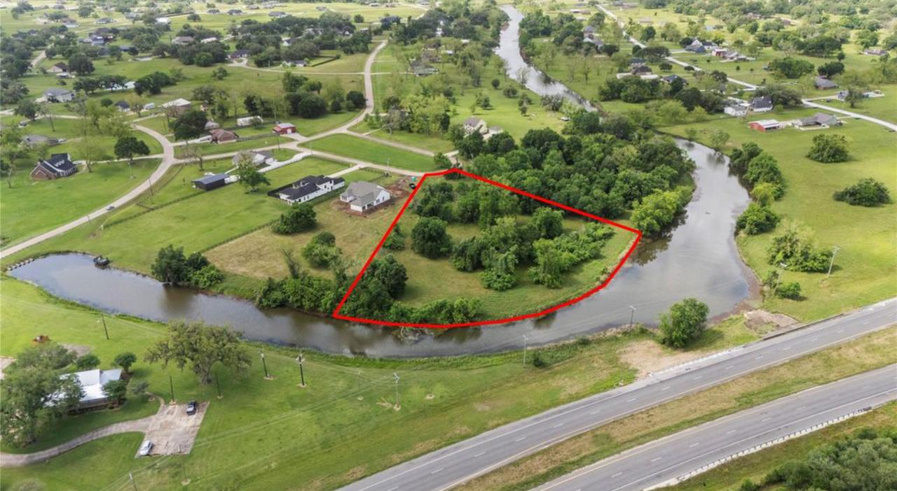
Wider view. State Highway 35 crosses the foreground and Mill Bayou wraps the lot in a meander.
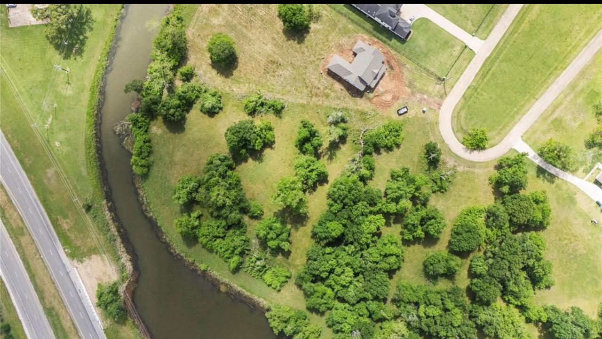
Overhead. Tree cover across most of the parcel; exposed bayou banks at low water.
The wedge is unmistakable here: a point of frontage at the street and the whole width of the lot given to the bayou. Note two things the survey data could not show. The bayou is running low and its banks are exposed mud — consistent with the intermittent classification in the water-regime row above. And the lot is densely treed, so the clearing allowance in §21 belongs at the top of its range, and the tree cover constrains where a pad, a drainfield and its reserve can actually go.
More seller photography — the bayou and the highway
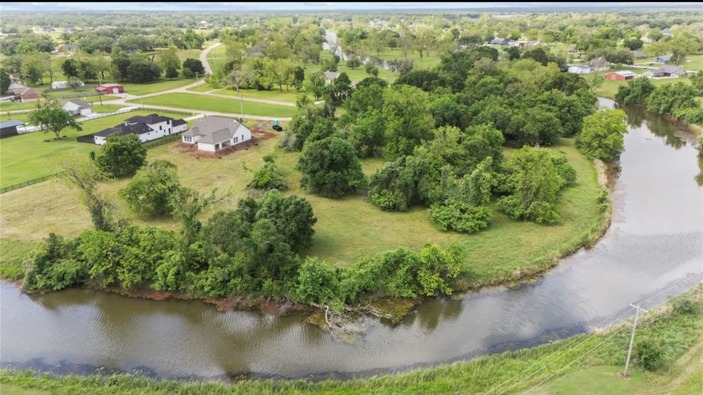
area contextThe bayou channel at close range from the north bank. Note the bare, undercut mud margin above the waterline — the wetted width is well below the channel width.
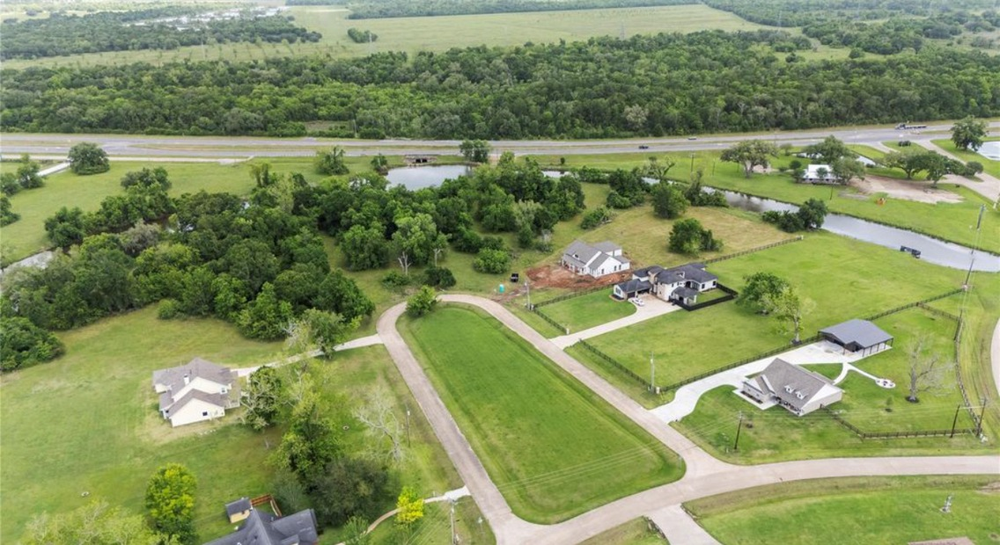
area contextThe approach along State Highway 35. The measured 480 ft from Lot 1 to the carriageway is a distance you can see, and hear.
Neither frame carries the seller’s boundary outline, so both are captioned as area context rather than as pictures of Lot 84. The three outlined frames above are the ones that fix the parcel.
Best forSetback geometry. The extra acre is the only thing on offer here that actually solves the 5BR + drainfield + 100% reserve + well-spacing puzzle comfortably.
WatchLongest water frontage means the largest share of the lot is in the low ground near the channel, and the TCEQ 75 ft absorption setback bites along all of it. It also sits downstream of Bar X Development Dam (NID TX01759) on a Mill Bayou tributary.
Verdict on this lotBuy this one if the plan is a large house and you will pay for the pad.
Bar X Ranch — Five-Lot Feasibility Portfolio v4.2 · Mohsin Chowdhury6 · Lot 1 — 1127 Saddle Horn Bend · Pages 9–10 of 59
Asa silty clay loam — well drained, prime farmland
Water
Unnamed 12.6-acre pond, 41 ft off the boundary. Shortest frontage of the five.
Water regime
Impounded, so it holds. The 12.6-acre pond is a dammed water body, not a flowing reach — NHD routes an artificial path through it. It retains water through the summer deficit. The nearest free-flowing channel is intermittent and 1,297 ft away.
Stocked?
Not by the state. The POA stocks its own two lakes; this pond is not a TPWD water.
No photograph of this parcel exists in the material supplied The seller supplied nine files under this address and not one is a photograph. All nine are screen captures of phone apps — the Zillow listing card, an Apple Maps pin and a Risk Factor flood panel. They record what a website said about the lot, not what the lot looks like. Lot 2 is the only parcel in the portfolio with no ground or aerial photography at all, and the only visual evidence for it in this document is the NAIP aerial and the LiDAR terrain in §22. If you shortlist this lot, a site visit or a commissioned drone pass is not optional.
Best forLowest cash outlay, and the highest buildable ground of the five at 28 ft — which is the single most valuable physical attribute in a Zone AE subdivision.
WatchThe shape is the problem: 424 ft × 187 ft on 1.00 acre of record, and the county's own polygon computes to 0.872 acre. Fitting a 5BR footprint, a 2,250–4,500 sq ft spray field, a 100% reserve area and a well at 100 ft from the field on a 187 ft width is the tightest test in the portfolio. This is also the only lot inside the Baileys Prairie ETJ, so Baileys Prairie subdivision regulation reaches it.
Verdict on this lotCheapest entry and the best ground, but prove the footprint fits before you bid.
Bar X Ranch — Five-Lot Feasibility Portfolio v4.2 · Mohsin Chowdhury7 · Lot 2 — 336 Wagon Wheel Trail W · Page 11 of 59
The parcel from above — recorded boundary on current imagery
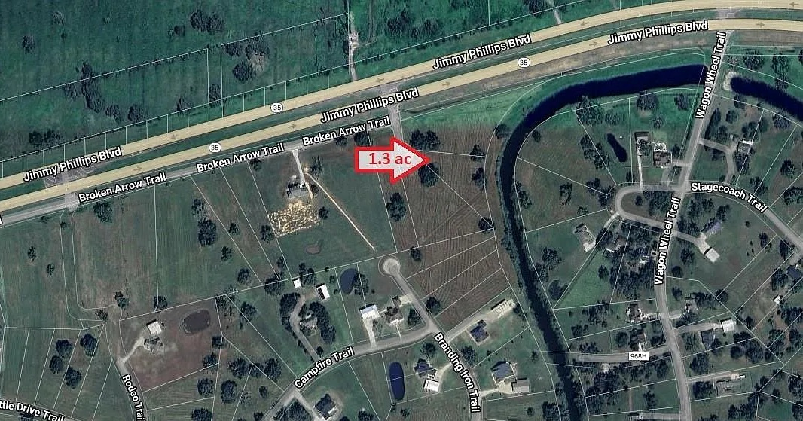
boundary markedPosition in the subdivision. The lot sits inside the bend of the watercourse, off the Broken Arrow Trail cul-de-sac, with SH 35 along the top.
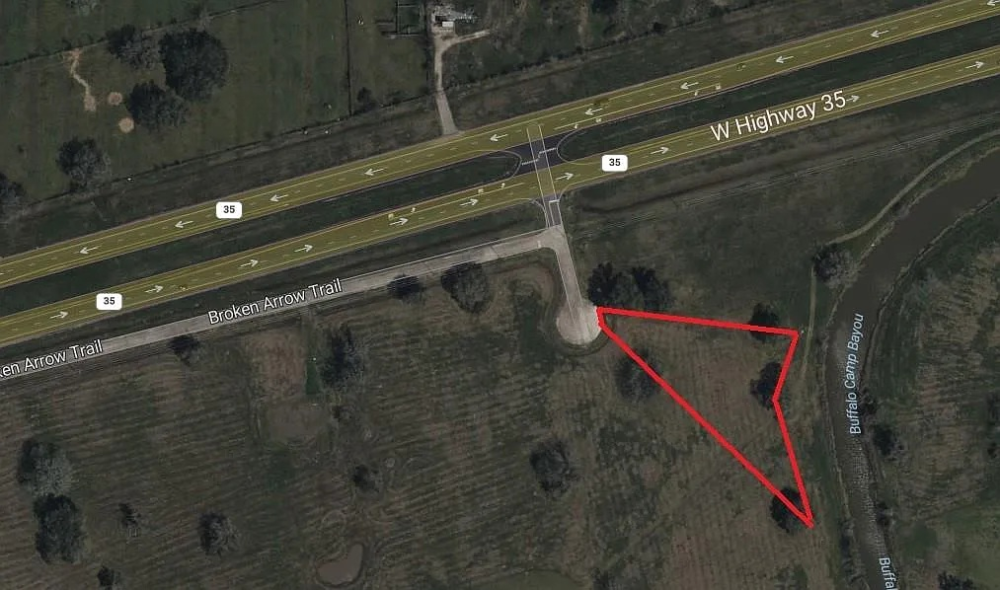
boundary markedThe recorded 1.30-acre polygon. A triangle: two long sides meeting at a point on the cul-de-sac bulb. Note the ploughed centre and the tree line along the water.
These replace the “no photography” note earlier editions carried for this lot. They are not seller marketing graphics: the outline is the recorded BCAD polygon plotted on Esri World Imagery by tools/lotmap.py, and the street names are Brazoria County’s own 911 centreline data. The 1.30 acres shown is the acreage of record, which is what corrected the original portfolio’s “~1.0 ac est.” The plan drawings above already carried this triangle; what plotting it on imagery adds is context and ground cover — the ploughed centre, the tree line along the water, the farm track across the south-west — and one measurement nobody had taken. See the note below.
The frontage is a point, not a frontage Measured off the recorded polygon, the boundary that lies against the Broken Arrow Trail cul-de-sac bulb is about 10 ft long. The two long sides — 504 ft along the water and 337 ft on the south-west — converge to very nearly a single point at the road. Everything the lot needs has to pass through that gap: the driveway, the water line, the electric service and the septic pump-out access. It also gives a plausible reason why the situs of record is the bare street name “HIGHWAY 35” with no house number, which is the 911-address blocker in §25. Treat the 10 ft as indicative, not surveyed — a digitised apex is exactly where GIS polygons are least reliable, and the plat may show a wider platted frontage. But the qualitative finding stands and is visible in the image: this lot touches its street at a corner. Put the frontage dimension at the top of the survey instruction in §34, and ask the county whether it meets the minimum frontage for a building permit before you offer.
Best forValue, on every measure that can be checked. It is the only lot priced below the county's own appraisal, the cheapest per acre by 11%, the second largest, and it is waterfront after all.
WatchThe street frontage is about 10 ft. The recorded polygon is a triangle whose two long sides converge to very nearly a point at the Broken Arrow Trail cul-de-sac, so the driveway and every utility have to pass through that one gap — see the aerials and the note below. Section 16 is also governed by a different recorded restriction instrument (84-29/885, 1984) from Sections 1 and 2, so the ACC rules are not necessarily the ones quoted for the other lots. And no street number has been assigned, so confirm the listing actually refers to PID 186219.
Verdict on this lotOn price and land quality this is still the pick of the five — the only lot below county appraisal, the cheapest per acre, waterfront, and the second largest. But it is now the lot with the most to confirm rather than the safest buy. Two things have to come back clean before an offer: the frontage dimension, because a 10 ft access point can constrain or even prevent a permit, and the 911 address, which the county will not issue a building permit without. Both are answerable in a fortnight and neither costs much. Resolve them and it leads the portfolio; leave them open and it is the riskiest of the five, because the risk is on the ability to build at all rather than on the cost of building.
Bar X Ranch — Five-Lot Feasibility Portfolio v4.2 · Mohsin Chowdhury8 · Lot 3 — Lot 29 Broken Arrow Trail · Pages 12–13 of 59
Zone AEWaterfront — Flag LakeAbuts a damDearest / acre
$58,000
$58,000 per acre · 1.00 ac of record
+16.0% vs county appraisal
The parcelboundary of record and section A–B
boundary of record and section A–B
Legal
Lot 132 · 1.00 ac of record
Situs of record
750 WAGON WHEEL TRAIL
Deed · plat · restrictions
V1729P804 · 16/104 · 1515/679
Dimensions
bbox 479 × 123 ft · county polygon 0.955 ac
Flood
Zone AE · panel 48039C0420K, 30 Dec 2020
Nearest BFE line
28.0 ft NAVD88, 1,492 ft off the parcel
Ground (LiDAR)
24 ft at the parcel (a 24 ft contour passes within 1 ft of the centroid)
Soil
Pledger clay — vertisol, hydrologic group D
Water
Flag Pond, 101.5 ac — named in USGS hydrography 14 ft off, plus the levee.
Water regime
Impounded, so it holds. Flag Pond is retained by the Flag Lake Levee and keeps water year-round. Note what is 167 ft away, though: a canal/ditch (NHD FCode 33600), artificial drainage that is normally dry between rain events.
Stocked?
Not by the state. Flag Pond is not in TPWD's stocking list. Any stocking is the POA's, on POA terms.
boundary markedThe parcel outlined by the seller, short end to the water. The long narrow shape matches the recorded 479 × 123 ft footprint.
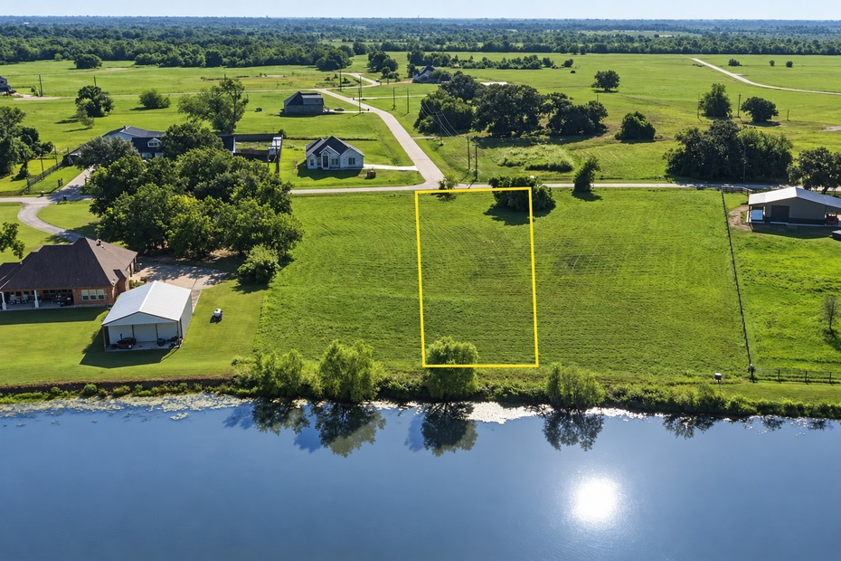
boundary markedThe same outline from the north, with built houses on both flanks and the impounded water across the foreground.
These are the first boundary-marked photographs of Lot 4 in any edition. One caution, and it is not a small one: Lot 4 and Lot 5 are 95 ft apart and their footprints are 479 × 123 ft and 490 × 110 ft — near-identical long rectangles on the same street. Nothing in the imagery itself separates them. These two frames are attributed to Lot 4 because the outline was drawn for the 750 Wagon Wheel Trail listing and appears under no other; that is the seller’s attribution, not an independent one. Confirm the boundary against the survey before you rely on it.
Best forThe view and the water. If the point of the exercise is a lake house, this is the only lot that delivers a 101-acre lake rather than a 13-acre pond.
WatchTwo things. It is 1.00 acre of record — not the 1.27 acres quoted from LoopNet — which makes it the most expensive land per acre in the portfolio by 28% over Lot 3. And the boundary is 11 ft from a levee embankment that impounds a 101-acre lake; the National Inventory of Dams carries no hazard-potential classification and no condition rating for it.
Verdict on this lotBest lot to live on, worst lot to buy on price. The dam needs answering first.
Bar X Ranch — Five-Lot Feasibility Portfolio v4.2 · Mohsin Chowdhury9 · Lot 4 — 750 Wagon Wheel Trail · Pages 14–15 of 59
Zone AEWaterfront — Flag LakePad does not fitAbuts a damDearest / acre — by 61%
$100,000
$93,458 per acre · 1.07 ac of record
+87.7% vs county appraisal
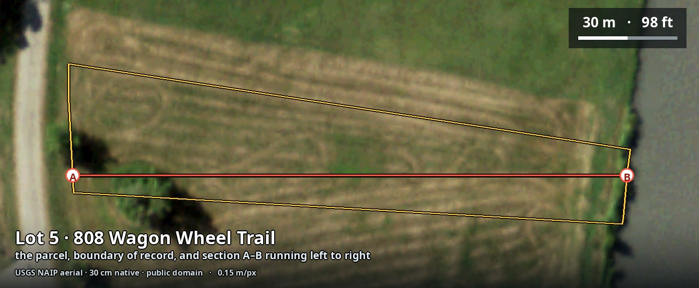
The parcelboundary of record and section A–B
boundary of record and section A–B
Legal
Lot 131 · 1.07 ac of record
Situs of record
808 WAGON WHEEL TRAIL
Deed · plat · restrictions
2007-000505 · 16/104 · 1515/679
Dimensions
bbox 490 × 110 ft · county polygon 0.964 ac
Flood
Zone AE · panel 48039C0420K, 30 Dec 2020
Nearest BFE line
28.0 ft NAVD88, 1,336 ft off the parcel
Ground (LiDAR)
24–25 ft at the parcel (mean 24.6 ft)
Soil
Pledger clay — vertisol, hydrologic group D
Water
Flag Pond again, 19 ft off — Lot 4's immediate neighbour on the same shoreline.
Water regime
Impounded, so it holds. Flag Pond again, same levee, same year-round pool. The feature 94 ft off the boundary is the same canal/ditch as Lot 4 — drainage infrastructure, dry between rain events, not an amenity.
Stocked?
Not by the state. As Lot 4 — Flag Pond carries no TPWD stocking record.
Highway
1.03 mi south of State Highway 35 — effectively identical to Lot 4
The parcel as marketed, labelled by the seller. Cleared, with Flag Lake beyond and built houses either side.
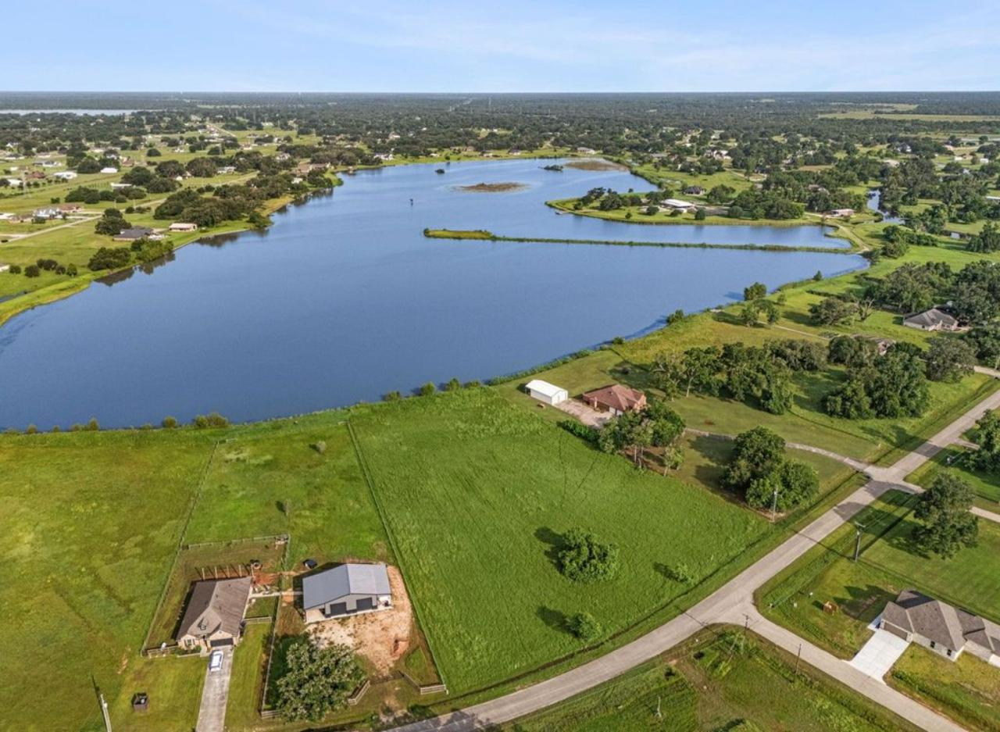
Flag Lake from the south. The impounded pool sits above the surrounding pasture.
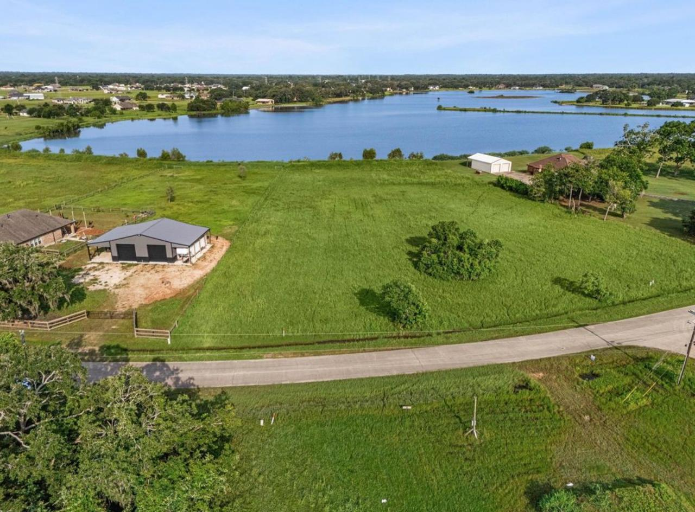
The lake shore and the levee embankment that retains it.
Three things here matter to the numbers. The parcel is already cleared and mown, so the clearing allowance in §21 sits at the bottom of its range. Utility poles run the length of Wagon Wheel Trail at the frontage, which makes the $0–$25,000 electric-extension range in §21 a low-end number on this lot rather than an open question. And both neighbouring parcels are built — one house is new, on a visibly raised pad — which is the practical answer to the pad-geometry question below.
More seller photography — the parcel as labelled
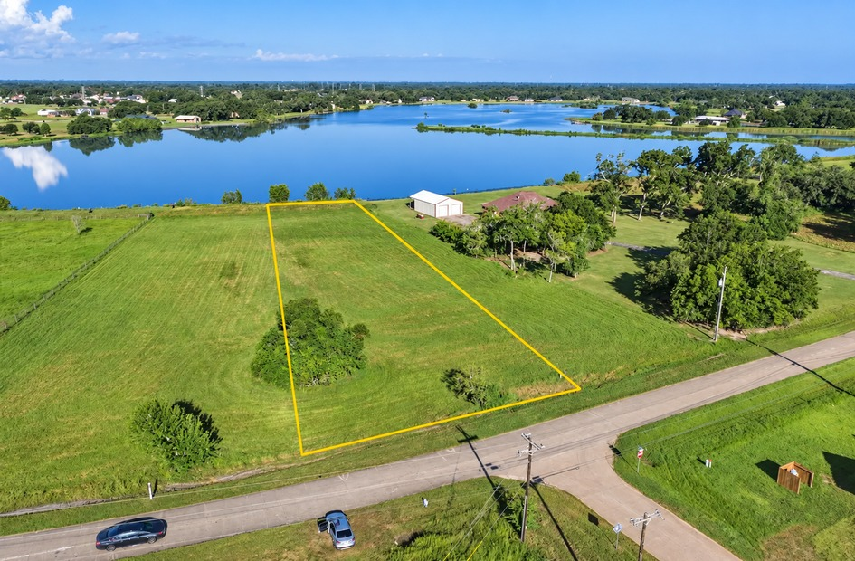
boundary markedThe parcel outlined at the frontage. Utility poles run the length of Wagon Wheel Trail here, and the ground is mown.
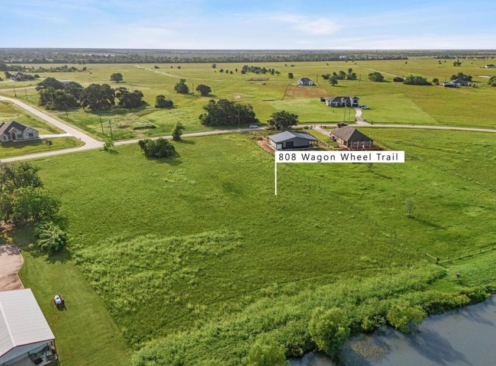
boundary markedThe seller’s own “808 Wagon Wheel Trail” label and leader line, with Flag Lake behind and the new-built house alongside.
The printed address label is the strongest attribution available anywhere in this photo set — it is the seller naming the parcel in the frame. Note that the outline in the left frame and the labelled parcel in the right frame are consistent with one another, which is what lets both be read as Lot 131.
Best forFrontage on the same 101-acre lake as Lot 4, with 0.07 more acre of record, and the quietest position in the study alongside its neighbour. That is the whole of the case for it, and at the asking price it is not enough — see the verdict.
Watch$100,000 is $93,458 an acre (MLS 84275418) — 2.5× Lot 3, 61% above its own neighbour Lot 4, and +87.7% over the county's appraisal of $53,280, the largest premium of the five by a factor of three. And the building pad does not fit. At 490 ft × 110 ft this is the narrowest parcel in the study, and the pad geometry needs 116 ft of width against the 110 ft available — it fails by 6 ft, the only lot of the five to fail outright. It also needs the deepest lift of any lot at 4.69 ft, sits on Pledger clay at 69.5% clay, is 21 ft from a levee impounding a 101-acre lake with no published hazard class, and its acreage of record (1.07) exceeds the county's own polygon (0.964) by 11%.
Verdict on this lotRule this one out. It is the dearest land per acre in the study by 61%, carries the largest premium over appraised value by a factor of three, needs the deepest lift, sits on the worst soil, abuts an unrated levee — and is the only parcel where the pad does not fit at all. Its lake frontage is available next door on Lot 4 for $42,000 less. There is no version of this brief in which Lot 5 is the right purchase at $100,000; on cost-to-build-ready it is $108,000 worse than Lot 2.
Bar X Ranch — Five-Lot Feasibility Portfolio v4.2 · Mohsin Chowdhury10 · Lot 5 — 808 Wagon Wheel Trail · Pages 16–17 of 59
[[S:flood]]
11 · Flood — the finding that changes the build
All five lots are in a mapped Special Flood Hazard Area. That was never in doubt. What
both earlier editions got wrong is the elevation arithmetic, and it goes the wrong way.
The correction
Both earlier editions assumed a base flood elevation of 24 ft and concluded that natural
ground of 28–30 ft cleared the county's requirement comfortably, so the house could be built at
grade with no fill. Queried against the county's own copy of the effective FIRM:
The nearest published BFE line to every one of the five lots reads 28 ft NAVD88, with
a 29 ft line further upstream. Not 24 ft.
The Zone AE polygon carries no static BFE — meaning the BFE varies across it and must
be read from the flood profile, which is precisely why a single assumed figure was never safe.
County LiDAR elevation contours put natural ground at the parcels at 24–28 ft,
not 28–30 ft.
Per-lot elevation arithmetic at the optimum pad location on each lot, from a
5 m DEM grid inside each boundary. Requirement = 28 ft BFE + 24 in freeboard = 30 ft. Costed in §22.
new in v3
Lot
Nearest published BFE
Ground at parcel (LiDAR)
Required finished floor
Fill / stem wall needed
Consequence
1127 Saddle Horn Bend
28 ft
25.3 ft
30 ft
4.2 ft
1,416 cy of fill. Room to build the pad and its slopes easily.
336 Wagon Wheel Trl W
28 ft
28.8 ft
30 ft
0.7 ft
268 cy. Practically at grade — the standout of the five.
Lot 29 Broken Arrow Trl
28 ft
26.5 ft
30 ft
3.0 ft
963 cy. Straightforward.
750 Wagon Wheel Trl
28 ft
24.3–25.7 ft
30 ft
3.8–5.2 ft
1,255–1,808 cy, and the pad barely fits the width. See §22.
What this does to the cost model
The second edition carried engineered pad and fill at $0–$8,000, treating it as
optional. On these figures it is not optional on any lot, and a 4–6 ft lift under a
2,400–2,800 sq ft house is a different item altogether.
§22 prices this per lot: $12,400 to $77,800. It is the third largest line in the
whole project after the house and the land.
It also all but forecloses the LOMA. A Letter of Map Amendment
requires naturally high ground; placing fill converts the application into a LOMR-F, which
carries a FEMA review fee and a far heavier evidential burden.
750 Wagon Wheel Trail sits against a dam
The parcel boundary runs 11 ft from the Flag Lake Levee embankment, which
impounds the 101.5-acre Flag Pond. The structure is in the National Inventory of Dams as
TX06298. Published NID data carries no hazard-potential classification and no condition
assessment for it.
Lot 1 has a lighter version of the same question: it lies downstream
of Bar X Development Dam (NID TX01759) on a Mill Bayou tributary, which NID does rate —
low hazard potential. Ask TCEQ Dam Safety about both before buying either.
What still has to be confirmed in writing, per lot
The site-specific BFE from Brazoria County Floodplain & 911 Administration. A
published BFE line 1,000–2,500 ft away is strong evidence, not a determination. Ask which
cross-section governs each lot — Mill Bayou governs Lot 1, and it is a different watercourse
from the one governing Lots 2 and 3.
Lowest adjacent grade at the proposed footprint, from a topographic survey. The LiDAR
contour band is a screening tool; the elevation certificate will be written from a survey.
Pluvial ponding. Flat coastal clay floods from rainfall alone, and a riverine BFE says
nothing about it. The wettest year in the 1991–2020 record delivered 2,024 mm of rain
against a 1,177 mm average — four times the driest year.
Levee status. Whether the Angleton Levee is FEMA-accredited, and its trajectory, remains
unconfirmed — as does the condition of Flag Lake Levee.
One correction carried forward: the county's 24-inch freeboard was adopted by
Commissioners Court in May 2005, not raised after Hurricane Harvey in 2017. The original
portfolio's causal story was twelve years out.
Mill Bayou from the air — seller photography
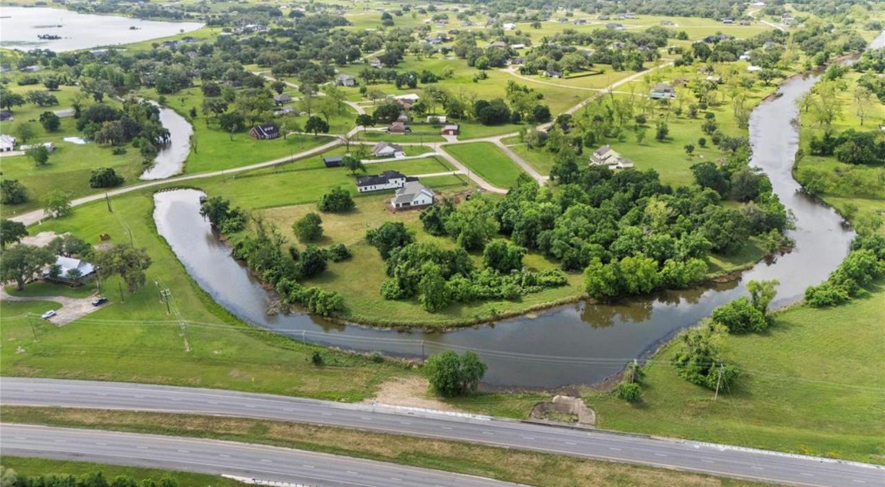
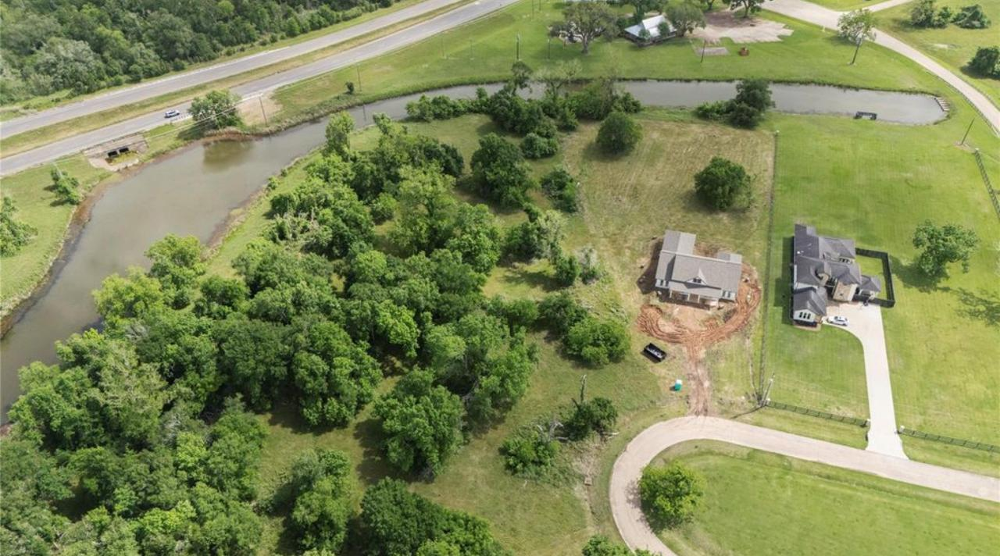
Left: Mill Bayou's course through the subdivision, with
State Highway 35 across the foreground and one of the association's lakes at the top left.
Right: the meander at Saddlehorn Bend that Lot 1 sits inside. Two things these confirm that the
mapping alone could not. The channel is at low water with exposed banks — consistent with
the intermittent classification in §31. And the highway really is that close to the
northern lots: the 480 ft measured to Lot 1 is a distance you can see.
Bar X Ranch — Five-Lot Feasibility Portfolio v4.2 · Mohsin Chowdhury11 · Flood · Pages 18–19 of 59
[[S:terrain]]
12 · Terrain, slope and how the drawings were made
The next five pages give each lot a true-scale plan with the county's 1-foot LiDAR
contours, and a longitudinal section cut along the dotted A–B line from the roadside boundary to the
lakeside boundary.
How to read them
The plan is rotated so that A–B runs left to right. North is shown by the needle,
which therefore points somewhere other than up.
Plan and section share the same horizontal scale and the same left-right position,
so you can drop a finger down from any point on the plan to the same point on the section.
A is the boundary at the street, B the boundary at the water. The profile is
continued a short way past both so the road ditch and the water are visible.
The section is drawn three times. Once vertically exaggerated so the shape can be
seen, with the true slope angles printed on the notable breaks; once at a true
1:1, which is what the ground really looks like; and once as an earth-curvature check.
Where the elevations come from
Contours are Brazoria County's published LiDAR product at a 1-foot interval.
The profile is sampled from the USGS 3DEP 1-metre digital elevation model at roughly 1 m
spacing along the line, converted from metres to feet. The two are independent datasets and they
agree to within about a foot across all five lots, which is the main reason to trust either.
Honest limitation
A DEM is a model of a bare-earth surface, not a survey. Slope angles quoted over a 6–8 m
baseline are reliable to a fraction of a degree; spot elevations are good to roughly ±0.5 ft.
An elevation certificate will be written from an instrument survey, not from this.
Why the aerials are not sharper — and why they have not been upscaled
The lot aerials come from USGS NAIP at 30 cm native, the best free public orthoimagery for this
area. Esri World Imagery was tested as an alternative and reaches 0.261 m per pixel here
— a 15% gain, not a transformation; above zoom 19 its tiles return only 123 distinct colours,
which is upsampling rather than new detail. So 2,400 m² of Texas coastal prairie simply does
not exist at higher resolution in any free source.
Rather than stretch a 1,400 px frame across the full column at ~198 dpi,
or upscale it and invent sharpness the imagery does not contain, each aerial is presented at the
width its own pixels support at 300 dpi. That is why the frames on the narrower parcels are
smaller on the page: they are sharp at the size shown. The seller's oblique photography in
§6 and §10 is 1,280 px and is reproduced three-up, where it prints at about 555 dpi.
The five lots compared on terrain
Plateau figures are the range across the level central part of each transect — the part you would actually build on. new in v3
Lot
Section A–B
Ground on the buildable plateau
Highest
Lowest
Relief
Steepest bank
Fill at the best pad (§22)
1127 Saddle Horn Bend
562 ft
24–26 ft
26.0 ft
21.2 ft
4.8 ft
8.4° (15%)
4.2 ft
336 Wagon Wheel Trl W
412 ft
27–29 ft
29.1 ft
21.2 ft
8.0 ft
8.8° (16%)
0.7 ft
Lot 29 Broken Arrow Trl
453 ft
26–27 ft
26.9 ft
21.2 ft
5.7 ft
11.6° (20%)
3.0 ft
750 Wagon Wheel Trl
568 ft
23–24 ft
30.7 ft (levee crest)
23.1 ft
7.6 ft
8.5° (15%)
3.8–5.2 ft
The headline: this is flat land with a bank at the end
Across all five lots the buildable ground falls within about 1.5 ft over 300–400 ft — a true
gradient of roughly 0.2°, which is why the 1:1 panels look like straight lines. That is
good news for a garden and for a house pad, and bad news for drainage: water does
not run off flat clay, it sits on it. Every angle worth reporting is concentrated in the last few
metres before the water, where the bank drops 3–4 ft at 8–12°, and in the roadside ditch.
On earth curvature, since you asked
Each section carries a curvature panel. Over transects of 412–568 ft the sea-level surface departs
from the flat drawing datum by 1.5 to 2.4 mm — that is 0.005 to 0.008 feet, roughly
one hundredth of the DEM's own vertical uncertainty and about one two-hundredth of a single contour
interval. It is drawn, exaggerated by a factor of tens of thousands, purely so you can see that it
has been checked. It is correctly ignored everywhere else in this document.
Bar X Ranch — Five-Lot Feasibility Portfolio v4.2 · Mohsin Chowdhury12 · Terrain method · Page 20 of 59
[[S:terrain1]]
13 · Terrain — Lot 1, 1127 Saddle Horn Bend
Plan and section at a true horizontal scale of
1:2000. Contours are the county's 1 ft LiDAR product; the profile is USGS 3DEP 1 m DEM.
Section A–B runs from the Saddle Horn Bend frontage (A) to the water boundary (B), a distance of
444 ft across the parcel.
What the ground doesThe section runs 562 ft from the Saddle Horn Bend frontage out to the Mill Bayou edge. The lot is a wedge: narrow at the road, wide at the water. Ground sits at 24–26 ft across the buildable middle, then drops 3.7 ft in the last 8 m to the bayou at 21.2 ft — an 8.4° bank. There is a second, sharper dip right at the road: 1.7 ft in 8 m at 3.9°, which is the roadside drainage ditch, not landform. Everything between is within a foot and a half of level.
What it means for buildingThe pad problem is visible here. The highest natural point anywhere on the transect is 26.0 ft, and the finished floor has to reach 30 ft. That is a 4 ft lift at the very best spot, and 5–6 ft anywhere you would actually want to sit the house.
Bar X Ranch — Five-Lot Feasibility Portfolio v4.2 · Mohsin Chowdhury13 · Terrain — Lot 1 · Page 21 of 59
[[S:terrain2]]
14 · Terrain — Lot 2, 336 Wagon Wheel Trail W
Plan and section at a true horizontal scale of
1:1250. Contours are the county's 1 ft LiDAR product; the profile is USGS 3DEP 1 m DEM.
Section A–B runs from the Wagon Wheel Trl frontage (A) to the water boundary (B), a distance of
412 ft across the parcel.
What the ground doesThe section runs 412 ft from Wagon Wheel Trail to the pond. This is the driest profile of the five: the ground rises off the road to 29.1 ft — the highest natural elevation measured on any of the five lots — holds a broad, genuinely level plateau across the middle of the lot, then falls away at 8.8° over the last few metres to the water at 21.2 ft.
What it means for buildingAt 29.1 ft the plateau is within a foot of the 30 ft requirement. That is the single most valuable physical fact in this portfolio: a foot of fill instead of five or six, on a lot that also happens to be the cheapest.
Bar X Ranch — Five-Lot Feasibility Portfolio v4.2 · Mohsin Chowdhury14 · Terrain — Lot 2 · Page 22 of 59
[[S:terrain3]]
15 · Terrain — Lot 3, Lot 29 Broken Arrow Trail
Plan and section at a true horizontal scale of
1:2000. Contours are the county's 1 ft LiDAR product; the profile is USGS 3DEP 1 m DEM.
Section A–B runs from the Broken Arrow Trl frontage (A) to the water boundary (B), a distance of
335 ft across the parcel.
What the ground doesThe section runs 453 ft from Broken Arrow Trail to the pond. The plateau is real and broad at 26–27 ft, with the high point at 26.9 ft. The lakeside bank is the steepest bank of the five at 11.6° — 4.1 ft of drop in 6 m — and there is another 8.2° cut at the road, again the ditch.
What it means for buildingGood, level building ground at 26–27 ft, needing about 3–4 ft of fill. The steep bank at B matters for the TCEQ 75 ft absorption setback and for erosion, and the ground it is cut into is Pledger clay.
Bar X Ranch — Five-Lot Feasibility Portfolio v4.2 · Mohsin Chowdhury15 · Terrain — Lot 3 · Page 23 of 59
[[S:terrain4]]
16 · Terrain — Lot 4, 750 Wagon Wheel Trail
Plan and section at a true horizontal scale of
1:1250. Contours are the county's 1 ft LiDAR product; the profile is USGS 3DEP 1 m DEM.
Section A–B runs from the Wagon Wheel Trl frontage (A) to the water boundary (B), a distance of
450 ft across the parcel.
What the ground doesThe section runs 568 ft from Wagon Wheel Trail to Flag Pond, and it is the one profile that behaves backwards: the ground rises toward the water, from 23.1 ft near the road to 30.7 ft at the far boundary, on a sustained 8.5° climb.
What it means for buildingThat rise is not a hill. It is the Flag Lake Levee embankment. The 101-acre pond is impounded above the level of the buildable part of the lot — the interior sits at 23–24 ft, the lowest of the five, while the crest beside it reaches 30.7 ft. You would be building in the shadow of a structure the National Inventory of Dams carries with no hazard classification and no condition rating.
Bar X Ranch — Five-Lot Feasibility Portfolio v4.2 · Mohsin Chowdhury16 · Terrain — Lot 4 · Page 24 of 59
[[S:terrain5]]
17 · Terrain — Lot 5, 808 Wagon Wheel Trail
Plan and section at a true horizontal scale of
1:1500. Contours are the county's 1 ft LiDAR product; the profile is USGS 3DEP 1 m DEM.
Section A–B runs from the Wagon Wheel Trl frontage (A) to the water boundary (B), a distance of
478 ft across the parcel.
What the ground doesThe section runs 477 ft from Wagon Wheel Trail to Flag Pond, and it is Lot 4's profile repeated 85 ft along the same shoreline. Ground leaves the road at 24.1 ft, holds 24–25 ft across the buildable middle, and then climbs to the far boundary. The steepest run measured anywhere in this study is here: 4.46 ft in 8.1 m, a 9.6° grade at 16.9%. Total relief 6.8 ft, from 23.3 ft to 30.1 ft.
What it means for buildingAs on Lot 4, the high ground is the Flag Lake Levee, not landform — the pond is impounded above the buildable part of the parcel. The buildable interior is the problem: the best pad ground is 24.8 ft, so reaching a 30 ft floor is a 4.7 ft lift, the deepest of the five, at 1,603 cu yd. And the parcel is only 110 ft wide where the pad and its side slopes need 116 ft. On this geometry the pad does not fit.
Bar X Ranch — Five-Lot Feasibility Portfolio v4.2 · Mohsin Chowdhury17 · Terrain — Lot 5 · Page 25 of 59
[[S:soil]]
18 · Soil — the one thing that decides all three of your problems
Soil settles your garden, your septic system and your foundation at the same time, and the five lots do not share it. The USDA soil survey splits them cleanly down the middle.
USDA NRCS SSURGO, Brazoria County soil survey, major component of the map unit at each parcel centroid. new in v3
Property
Lots 1 & 2 — Asa silty clay loam
Lots 3, 4 & 5 — Pledger clay
Why it matters to you
Taxonomy
Fluventic Hapludoll — an alluvial mollisol
Typic Hapludert — a vertisol
Mollisols are the world’s good farming soils. Vertisols are fertile but physically hostile.
Clay content, topsoil
36.5%
69.5%
Workability, drainage, everything.
Organic matter, topsoil
3.1%
6.5%
Both genuinely fertile; Pledger more so.
pH (1:1 water)
6.8 — near neutral
7.0 — neutral
Both excellent. Neither needs correcting for most vegetables.
Drainage class
Well drained
Moderately well drained
Wet feet kill more garden plants here than cold does.
Surface runoff
Negligible
High
High runoff on flat ground means standing water after rain.
Hydrologic group
B
D
D is the worst class — least infiltration, most runoff. A pluvial flood risk the FEMA map does not describe.
Saturated conductivity
9.0 µm/s
0.21 µm/s
Pledger is 43× less permeable. This is what drives the septic system type.
Linear extensibility (shrink-swell)
4.5 — low to moderate
19 — very high
Above about 9 is “high”. This is the number that cracks slabs, drives, and pipework.
Available water capacity
0.18–0.20
0.14
Asa holds more plant-available water despite being lighter.
Farmland classification
All areas prime farmland
All areas prime farmland
Both are officially prime. “Prime” is about fertility, not about being easy.
Flooding frequency
Rarely flooded
Rarely flooded
Same on both.
Asa silty clay loam — Lots 1 and 2
For gardening: this is the good stuff. A silty clay loam at pH 6.8 with 3% organic
matter, well drained, negligible runoff. It works over a wide moisture range, takes a spade in
most weather, holds water without waterlogging, and needs no pH correction. You could plant
directly into it.
For septic: at 9 µm/s it is likely TCEQ Class III, which
means roughly 2,250 sq ft of absorptive area and a realistic chance of avoiding a full aerobic
spray system. For foundations: a linear extensibility of 4.5 is ordinary engineering.
Pledger clay — Lots 3 and 4
For gardening: hard work, permanently. Nearly 70% clay with slickensides in the subsoil.
It is sticky and unworkable when wet, sets like fired brick when dry, and opens cracks you can put
a hand into in August. Very fertile — but most people here end up gardening in raised beds with
imported soil, which is a real annual cost and effort.
For septic: 0.21 µm/s is effectively impermeable — TCEQ
Class IV, a conventional drainfield is not allowed, and an aerobic unit with a spray or
drip field is mandatory: $15,000–$25,000 plus a maintenance contract for life.
For foundations: extensibility 19 demands a post-tensioned or pier-and-beam design plus
lifelong moisture management around the perimeter.
What this is worth, in money
On the septic alone the soil difference is plausibly $7,000–$15,000 in favour of Lots 1 and 2,
plus $300–$600 a year forever for the aerobic maintenance contract that Lots 3 and 4 will require.
On the foundation, a post-tensioned slab engineered for a high-PI vertisol typically runs
$8,000–$20,000 above a conventional engineered slab on a 2,400–2,800 sq ft house. Lot 29's
$10,000 land saving does not survive either comparison, let alone both.
The limit of this finding — and it is a real limit
SSURGO is mapped at about 1:24,000. It tells you the soil that predominates in a map unit,
and the major component here is given an 85% share. It is strong evidence and it is free; it is
not a site-specific soil evaluation, and the TCEQ soil class that actually governs your permit
can only be set by a licensed site evaluator digging on your lot. Order that evaluation on the
shortlisted lot before you close. It costs $350–$600 and it is the highest-value money in this
entire project.
Bar X Ranch — Five-Lot Feasibility Portfolio v4.2 · Mohsin Chowdhury18 · Soil · Page 26 of 59
[[S:restrictions]]
19 · Deed restrictions and buildability
The recorded Bar X Ranch declaration of restrictions has now been read rather than paraphrased.
Several figures repeated by the earlier editions are not in it, and several provisions that matter a
great deal to your plans are.
Bar X Ranch declaration of restrictions as recorded (Deed Vol. 1679, Pg. 695). new in v3
Provision
What the recorded instrument actually says
Effect on your plan
§3.15 Pets and livestock
No livestock of any kind other than house pets of reasonable kind and number. Horses are the single express exception: 1 per 32,670 sq ft, 2 per 42,000 sq ft, one more per additional 21,880 sq ft.
Chickens and ducks are not house pets and are not horses. Your hobby-farming plan is very likely barred.
§3.01 Structures permitted
One single-family dwelling, one attached or detached garage, and one horse barn no larger than 30 ft × 25 ft. Anything else needs written committee approval before construction.
No coop, no run, no shed, no greenhouse without a written variance. A greenhouse is as much of an issue as a coop.
§3.03 Dwelling size
Minimum 1,100 sq ft of living area, excluding open porches and garages; 1,400 sq ft if more than two storeys.
The “1,800 sq ft minimum” quoted by earlier editions is not in this instrument. Your 2,400–2,800 sq ft house clears it easily either way.
§3.06 Minimum lot area
No building on a lot under 21,880 sq ft; no resubdivision without written committee approval.
All five lots clear this. Lot 2 at 0.872 ac by the county polygon is still 38,000 sq ft.
§3.05 Orientation
The front of the lot is the property line with the shortest dimension abutting a street; the dwelling must face it; a detached garage may sit no nearer the front line than the house.
Fixes your house orientation. On the long, narrow lots this constrains where the septic field and garden can go.
§3.12 Fences
Any lot with a horse barn must be fenced. All fences and their locations need written approval. No home-made fences.
A garden fence — against deer, rabbits and your own dogs — is a committee submission.
§3.04 Roofing
Wood shingle, built-up tar and gravel, or asphalt shingle of not less than 340 lb per square.
Rules out standing-seam metal without a variance; metal is otherwise the sensible coastal choice.
§3.07 Nuisance
No noxious or offensive activity, nor anything that may become an annoyance to the neighbourhood. Exterior display or discharge of firearms expressly forbidden.
A cockerel is the textbook “annoyance” complaint even where hens are tolerated.
§3.13 Lot maintenance
Owners must keep grass and weeds cut and fences painted; the association may enter, do the work, and bill the owner.
This is the origin of the $125 vacant-lot mowing charge in the carrying-cost model.
§3.14 / §3.16 Septic and drainage
No septic tank may drain into road ditches. Drainage of streets, lots or roadway ditches may not be impaired.
Directly relevant to the 2–6 ft pad that §11 shows you need: you may not solve your flood problem by pushing water onto the road or a neighbour.
§4.05 Committee
The architectural control committee's powers ceased 15 years after the instrument and passed to the property owners' association.
Submissions go to the POA today, not to a developer committee.
The caveat that you must close before relying on any of this
The instrument read above is one Bar X Ranch declaration. Your five lots are governed by three different recorded instruments — Section 1 by 1515/679 (1980), Section 2 by 1532/471
(1980), Section 16 by 84-29/885 (1984) — and none of them is the document quoted here. Subdivision
declarations of this era were near-identical in form across sections, so the provisions above are
very likely to be substantially what governs your lot. Very likely is not good enough for the
decision you are making. Pull the recorded instrument for the specific lot from the Brazoria
County Clerk, and ask the POA in writing, before you close, one question: may I keep a small
number of chickens and ducks, and may I build a coop and a greenhouse? Get the answer on
letterhead.
If poultry is the point, here is the alternative
Unincorporated Brazoria County has no zoning, so outside a deed-restricted subdivision there
is generally nothing stopping you keeping poultry on your own land. The trade is everything Bar X
Ranch gives you — the two lakes, two pools, clubhouses, tennis and basketball courts, playgrounds,
concrete streets, the 97% owner-occupied neighbourhood and the maintained frontages. Unrestricted
acreage a few miles further out will let you keep ducks and will not give you any of that. That is
the real choice in front of you, and it is not a choice this document can make for you.
Bar X Ranch — Five-Lot Feasibility Portfolio v4.2 · Mohsin Chowdhury19 · Restrictions · Page 27 of 59
[[S:septic]]
20 · Septic (OSSF) — sized against the regulation, per soil
Every house here is on a private well and an on-site sewage facility. This is where the original
portfolio was most wrong, and where §18's soil finding now produces two different answers.
30 TAC §295.91 Table III and §295.91(2)
Basis
Flow Q (gpd)
Septic tank required
5 bedrooms, dwelling under 4,500 sq ft, no water-saving devices
450
Both flows fall in the 351–500 gpd band → 1,250 gal minimum verified
Same, with water-saving devices
360
Absorptive area = Q ÷ Ra. The original portfolio used 0.6 gal/sf/day, which exceeds every class in the TCEQ table. verified
TCEQ soil class
Loading rate Ra
Absorptive area at Q = 450
Which lots
System that results
Class III — clay loam
0.20 gal/sf/day
~2,250 sq ft
Lots 1 & 2 — Asa, 9 µm/s
Conventional drainfield may be permissible; low-pressure dosed or aerobic if not. $8,000–$15,000
Class IV — clay
0.10 gal/sf/day
~4,500 sq ft
Lots 3, 4 & 5 — Pledger, 0.21 µm/s
Conventional drainfield not permitted. Aerobic treatment unit (600 gal min) plus spray or drip field, and a mandatory maintenance contract. $15,000–$25,000
Class Ib–II — sandy/loamy
0.25–0.38
~1,184–1,800 sq ft
Neither, on the survey
Conventional. Cheapest outcome, not available here.
The number the original document simply did not contain
Whichever class applies, TCEQ requires a 100% reserve area in addition to the field. On Lots 3
and 4 that means committing roughly 9,000 sq ft — a fifth of a one-acre lot — to sewage
disposal, before the house, the driveway, the garage, the well and your garden. On Lots 1 and 2 the
same commitment is about 4,500 sq ft. The original budgeted the permit and the soil test and left the
system itself out altogether.
30 TAC §295.91 Table X — these are what make a narrow waterfront lot hard verified
From
To
Minimum separation
Private well or cistern
Soil absorption or spray field
100 ft
Private well or cistern
Septic tank
50 ft
Lake or pond, at normal pool
Soil absorption / unlined evapotranspiration bed
75 ft
Lake or pond, at normal pool
Surface (spray) application
50 ft
Property line
Spray field
10 ft (and no spray across a line)
Test this on paper before you bid
Take the lot plan in §13–17, and lay onto it: a 2,400–2,800 sq ft house at 30 ft finished floor, a
garage, the field, the equal reserve, a well 100 ft from both, the 75 ft water setback, and your
garden. On Lot 2 at 187 ft wide and on Lot 4 at 123 ft wide this is the test that
decides whether the lot works at all. Lot 1 at 1.95 acres is the only one where it is not close.
Bar X Ranch — Five-Lot Feasibility Portfolio v4.2 · Mohsin Chowdhury20 · Septic · Page 28 of 59
[[S:cost]]
21 · Cost to build — rebuilt with the pad and the soil in it
The second edition carried fill at $0–$8,000 and treated it as optional. §11 and §12 show it is
mandatory on every lot, at 2–6 ft. That single line, plus the vertisol foundation upcharge on Lots 3
and 4, is most of the change here.
One lot, a 2,400–2,800 sq ft five-bedroom house. estimate
Item
Low
High
Note
County development / building permit (flood zone)
$165
$300
One combined permit. 2015 schedule: $75 + $0.04/sf. A later county sheet shows $100 for residential; the full document could not be retrieved, so confirm the current fee. unverified
Fill & grading permit
$0
$80
Contractor IRC registration
$0
$0
Required before the permit issues
OSSF site and soil evaluation
$350
$600
Buy this first
OSSF permit to construct
$300
$500
OSSF system installed
$8,000
$25,000
Class III on Lots 1–2, Class IV aerobic on Lots 3–4
Water well, pump and pressure tank
$10,000
$20,000
Water treatment for coastal groundwater
$0
$8,000
Test before you assume $0
Boundary and topographic survey
$1,500
$3,500
Elevation certificate
$500
$900
LOMR-F preparation
$500
$1,200
Fill forecloses the fee-free LOMA route
Driveway culvert and county road access
$1,500
$5,000
Electric service extension
$0
$25,000
Get this quoted per lot
Propane tank and set
$1,000
$3,000
No natural gas here
Clearing and grubbing
$1,500
$6,000
Engineered pad and imported fill
$12,400
$77,800
Calculated per lot in §22. Lot 2 $12.4–28.3k; Lot 3 $24.3–50.7k; Lot 1 $32.0–65.3k; Lot 4 $29.3–77.8k
Vertisol foundation upcharge
$0
$20,000
Lots 3 and 4 only — post-tensioned or piered for LEP 19
POA architectural review, transfer and resale certificate
$500
$750
Pre-construction subtotal
~$38,000
~$198,000
v1: $11–17k → v2: $26–108k
A permit blocker on Lot 3 that no earlier edition caught
The county's residential requirements sheet states that an application will not be accepted
without a correct, verified 911 address and signature. Lot 3 has no street number of
record — its situs reads HIGHWAY 35 (§3). That makes 911
addressing a prerequisite to permitting on that lot, not an administrative tidy-up, and it is
the same office that assigns the address, which is why the question is put in that lot's letter
(Appendix B.3). The same sheet confirms the sequence: Environmental Health must approve the septic
first and a copy of the septic permit accompanies the building-permit application — so the
soil evaluation is not merely the cheapest thing to buy first, it is the gating item.
Central planning case $60,000–$95,000. The three variables that decide where you
land are, in order: soil class, depth of fill, and distance to power. All three
are lot-specific, and all three can be resolved for under $1,000 and three phone calls.
All-in cost of putting a family into a house on one of these lots
Component
Low
High
Land, one lot
$45,000
$82,500
Pre-construction, above
$38,000
$198,000
House, 2,400–2,800 sq ft at $175–$250/sq ft estimate
$420,000
$700,000
All-in, one lot built
~$505,000
~$980,000
Put the lot price in proportion
The whole spread between the cheapest and dearest lot is $55,000. The spread on the
pad alone is $28,000 between Lot 2 and Lot 4 at mid-case (§22), on the septic $17,000,
on the foundation $20,000, and on the electric extension $25,000. Choosing the lot on
its asking price, rather than on its soil and its elevation, optimises the smallest of the five.
Bar X Ranch — Five-Lot Feasibility Portfolio v4.2 · Mohsin Chowdhury21 · Cost · Page 29 of 59
[[S:fill]]
22 · The pad — what the flood headroom actually costs
§11 established that the finished floor must reach 30 ft and that no lot is high
enough to build at grade. This prices that, lot by lot, from the measured ground.
How the number is built
A 5-metre grid of ground elevations was sampled from the USGS 3DEP 1 m DEM inside each recorded
boundary (141–325 points per lot). The pad goes where it costs least, subject to its side
slopes fitting inside the boundary and staying 30 m clear of mapped water — which keeps
the house off the bank and, on Lot 4, off the Flag Lake levee. Pad top is 29.5 ft, half a foot
below the floor for a 6-inch slab; fill is measured from the stripped surface. Volumes are the exact
frustum with 3:1 side slopes, because plan area × depth understates a deep pad badly
— the slope wedge grows with the square of the lift and the corners with the cube.
Pad top 29.5 ft · 69 × 82 ft pad for a ~3,040 sq ft house and garage plus a 10 ft working margin · 3:1 slopes · fill at $16–$30 per compacted cubic yard placed. estimatenew in v3
Lot
Ground at the pad
Lift required
Fill (cu yd)
Pad + slope toe
Cost range
Mid-case
1127 Saddle Horn Bend
25.3 ft
4.2 ft
1,416
97 × 110 ft
$31,997 – $65,255
$48,600
336 Wagon Wheel Trail W
28.8 ft
0.7 ft
268
76 × 89 ft
$12,421 – $28,311
$20,400
Lot 29 Broken Arrow Trail
26.5 ft
3.0 ft
963
90 × 103 ft
$24,297 – $50,729
$37,500
750 Wagon Wheel Trail
25.7 ft
3.8 ft
1,255
95 × 108 ft
$29,264 – $60,101
$44,700
808 Wagon Wheel Trail
24.8 ft
4.7 ft
1,603
100 × 113 ft
$35,148 – $71,198
$53,200
Lot 2 is the finding here
Its best pad sits on ground at 28.8 ft, so it needs a lift of
eight inches and 268 cubic yards. Every other lot needs three to five feet and a
thousand to eighteen hundred yards. Mid-case that is $20,400 against $37,500 to $58,200
— a saving of $17,000 to $38,000 before a brick is laid, on the lot that is also the cheapest
to buy and sits on the better of the two soils.
Lot 4 has a width problem as well as a fill problem
The only ground on Lot 4 high enough to save fill is the flank of the levee embankment,
and a geotechnical engineer is unlikely to let you found a house there. Taken fully clear of the
embankment the pad sits on 24.3 ft, the lift rises to 5.2 ft, 1,808 cubic
yards, and the cost to $38,630 – $77,762.
Worse, that pad plus its 3:1 slopes needs 119 ft of width on a lot
only 123 ft wide. In practice: a retaining wall, steeper engineered slopes, or a smaller
house.
And on Lot 5 the pad does not fit at all
808 Wagon Wheel is the same shoreline as Lot 4 and 85 ft along it, but
narrower again. The best pad ground clear of the levee is 24.8 ft, so the lift is
4.7 ft — the deepest of the five — at 1,603 cubic yards and
$35,148 – $71,198. The pad and its slopes then need 116 ft of width on a lot only 110 ft
wide: it is short by 6 ft. Lot 5 is the only one of the five where the modelled geometry fails outright rather than merely running tight. But the seller's own aerial photograph qualifies this (§10): both neighbouring parcels on the same street and the same width are built, one of them newly and on a visibly raised pad. So the constraint is real but evidently surmountable — by a smaller footprint, a retaining edge, or certified steeper side slopes than the 3:1 this model assumes. What it is not is a reason to assume the standard pad price.
Retaining structures, certified steeper slopes or a deliberately narrow footprint would all have to
be priced before an offer — which is one of the questions put to the county in Appendix B.
What sits inside those figures — Lot 1 as the worked example
The same nine line items are priced on every lot — only the quantities move with the lift. Itemised in docs/EVIDENCE.md. Gulf Coast planning rates, not quotations.
Group
Contents
Low
High
Earthworks
Strip and stockpile topsoil, imported select fill placed and compacted in lifts, topsoil and turf to the slopes
$25,196
$47,675
Engineering
Geotechnical borings and report, engineered pad and drainage plan, compaction density testing
$5,200
$12,000
Compliance
Erosion and sediment control, drainage works so runoff is not pushed onto the road or a neighbour, county fill and grading permit
$1,600
$5,580
Pad package, Lot 1
$31,997
$65,255
Why not elevate the house on piers instead
It is the standard coastal-Texas alternative, and here it is the wrong answer. Pier-and-beam or a
stem wall runs roughly $26–$44 per square foot of floor area — about
$106,000 mid-case on a 3,040 sq ft footprint — and that is nearly flat with height. A
fill pad only becomes as expensive at about 9.3 ft of lift. None of these five is close, so fill is correct on all five. Revisit it only if a written BFE comes back above about 31 ft.
What moves these numbers
The written BFE. Every extra foot adds roughly 350–450 cubic yards and
$8,000–$14,000 per pad. A BFE of 29 ft rather than 28 ft would cost more than the
entire land-price gap between Lot 2 and Lot 3.
Haul distance. The $16–$30 per yard spread is mostly haul. Local bank sand is the
low end, imported select clay-sand with a long haul the high end. Two phone calls to pits
narrow this more than any other input in the whole study.
House size and slopes. 2,400 sq ft instead of 3,040 takes about 15% off every figure;
flatter 4:1 slopes cost about 20% more fill and do not fit on Lot 4 at all.
Drainage. The restrictions forbid impairing drainage of streets, lots or ditches
(§19), so the $1,000–$4,000 line is not optional.
Bar X Ranch — Five-Lot Feasibility Portfolio v4.2 · Mohsin Chowdhury22 · The pad & fill · Pages 30–31 of 59
[[S:carry]]
23 · Annual carrying cost — with the tax model corrected
The second edition's tax model included an Angleton-Danbury hospital district levy and an Angleton
drainage district levy. Checked parcel by parcel against the county's taxing-district layers,
these lots are in neither — nor in any junior-college district or MUD.
Brazoria County Truth-in-Taxation five-year summary, cross-checked against the county taxing-district GIS layers
Taxing entity
Rate per $100 (TY2025)
Applies to these lots?
Brazoria County
0.304758
Yesverified
Columbia-Brazoria ISD
0.953000
Yes — all five lots verified
Emergency Services District 1 and 2
up to 0.100000 each
Yes — rate not confirmed; statutory cap used estimate
Angleton-Danbury Hospital District
0.074685
No — no hospital district reaches these parcels corrected
Angleton Drainage District
0.052816
No — county-wide drainage only corrected
Brazosport / Alvin Junior College District
—
No — neither district reaches these parcels new
Effective combined rate
1.2578% – 1.4578%
Texas reappraises on sale, so plan on the higher tax line from year two
Item
Basis
All five lots
One lot (1127 Saddle Horn Bend)
Property tax, on the current appraised value
1.26–1.46% of $256,180 / $65,030
$3,223–$3,735
$818–$948
Property tax, once reappraised to what you pay
1.26–1.46% of $334,500 / $82,500
$4,208–$4,876
$1,038–$1,203
POA dues
$400 per lot per year unverified
$2,000
$400
Vacant-lot mowing charge
$125 per lot per year unverified
$625
$125
Total annual carry while vacant
$5,848–$6,360
$1,350–$1,730
The drag on five lots
$5,848–$6,360 a year is 1.7–1.9% of the $334,500 land basis,
every year, on land that produces nothing. Over three years, $17,500–$19,100. Add the 30.6%
premium over appraised value and the multi-lot investment case needs Bar X Ranch land to
appreciate roughly 4–5% a year just to break even.
The drag on one lot
$1,350–$1,730 a year, and it stops being dead money the day you
build. Once the house is standing you also become eligible for the Texas homestead
exemption, which the vacant-land case cannot claim — a material saving the earlier editions
never mentioned.
POA dues and the mowing charge come from listing copy for other
Bar X Ranch lots, not from the association. Confirm both, and the transfer fee, on a POA resale
certificate. §19 shows the mowing charge is grounded in §3.13 of the recorded restrictions.
Bar X Ranch — Five-Lot Feasibility Portfolio v4.2 · Mohsin Chowdhury23 · Carrying cost · Page 32 of 59
[[S:wind]]
24 · Wind, storm and insurance
You asked about safety from storms. On the coast this is two separate questions —
what the building code makes you build, and what the insurance costs — and the answers are better
than you might fear for an address 28 miles from the Gulf.
Wind zone — established for the first time in this edition
The Texas Department of Insurance divides Brazoria County into three windstorm zones, and
the dividing line between Inland I and Inland II runs along State Highway 35 — the highway
this subdivision fronts. All five lots lie on the seaward side of SH 35 (between 0.09 and
1.03 miles south of it), which places all five in Inland I: a 120 mph three-second-gust design
wind speed under the 2006 IBC/IRC with Texas revisions. For comparison, Surfside Beach and
Quintana on the shore are Seaward at 130 mph, and Bailey's Prairie and West Columbia inland are
Inland II at 110 mph.
Requirement
What it means here
Design wind speed
120 mph 3-second gust, TDI Inland I new in v3
Certificate of compliance
A WPI-8 is required, and the application must be made before construction begins. Brazoria is a designated catastrophe area. verified
Who signs it
A TDI-appointed engineer for new construction in a first-tier county
Why you want it anyway
Without a WPI-8 the property is not insurable through TWIA, which is the residual market most coastal Texas homes depend on
Storm surge
Not the governing threat at this distance inland — the nearest Gulf shoreline is 28 mi by road. Wind and rainfall are.
Rainfall
The wettest year in the 1991–2020 record delivered 2,024 mm against a 1,177 mm average. This, not surge, is what floods Bar X Ranch.
Coverage
Note
Estimated annual
Flood — NFIP or private
Risk Rating 2.0 prices on first-floor height and distance to water, so waterfront costs more and the 30 ft pad helps. NFIP building cover caps at $250,000; excess flood needed above that.
$1,500–$4,000
Windstorm — TWIA
State average residential premium $2,541 as at 30 June 2026; the 2027 filing directs no rate increase, with a ~3% automatic dwelling-coverage uplift on renewals from 1 Sept 2026. verified
$2,500–$4,000
Homeowners, excluding wind and flood
Fire, liability, contents
$1,000–$1,500
Total once builtestimate
$5,000–$9,500
Two things to understand about the flood line
A LOMA, if you ever obtained one, would lift the federal mandatory-purchase requirement —
it would not remove the exposure, and your lender may still insist on cover. But §11 shows you will
be placing fill, and fill forecloses the LOMA route and pushes you into a LOMR-F, which
carries a FEMA fee and a heavier burden of proof. Plan on carrying flood insurance permanently.
Windstorm cover is unaffected by any of this.
Bar X Ranch — Five-Lot Feasibility Portfolio v4.2 · Mohsin Chowdhury24 · Wind & insurance · Page 33 of 59
[[S:climate]]
25 · Living here — the weather, in degrees Celsius
A humid subtropical Gulf coast climate: long, hot, wet summers, short mild winters,
almost no frost, and a 320-day growing season that is the single best thing about gardening here.
ERA5 reanalysis at the parcels, daily 1991–2020, aggregated to monthly means. Fahrenheit shown only for cross-reference with local sources. new in v3
Month
Mean daily max °C
Mean daily min °C
Mean °C
Rainfall mm
°F max / min
Jan
17.3
9.3
13.3
96
63 / 49
Feb
19.1
11.0
15.1
79
66 / 52
Mar
22.0
14.1
18.1
90
72 / 57
Apr
25.2
17.4
21.3
96
77 / 63
May
28.7
21.5
25.1
89
84 / 71
Jun
31.2
24.4
27.8
107
88 / 76
Jul
32.1
25.2
28.6
90
90 / 77
Aug
32.5
25.2
28.9
98
90 / 77
Sep
30.2
23.1
26.6
121
86 / 74
Oct
26.7
18.9
22.8
109
80 / 66
Nov
21.8
14.0
17.9
103
71 / 57
Dec
18.3
10.5
14.4
99
65 / 51
Year
25.4
17.9
21.7
1,177
78 / 64
What the numbers feel like
Summer is the constraint. July and August average 32.5 °C by day and 25 °C at
night — it is the humidity and the warm nights, not the peak, that wear people down.
About 51 days a year reach 32 °C, 8 reach 35 °C, and 38 °C is rare (0.5 days a year).
The 30-year maximum was 41 °C.
Winter barely exists. January averages 17.3 °C by day and 9.3 °C at night. Air frost
occurred in only 18 of 30 years, averaging 1.9 frost days. The 30-year minimum
was −6 °C.
Rain is even, and then it isn't. 1,177 mm a year spread remarkably evenly, 79–121 mm
every month, with a September peak. But the wettest single year delivered 2,024 mm and
the driest 488 mm — a fourfold swing. Design the garden and the drainage for both.
The gardening calendar
Mean last spring frost
2 February
Mean first autumn frost
19 December
Frost-free growing season
~320 days
Earliest / latest last spring frost
5 Jan / 5 Mar
USDA hardiness zone
9a–9b
Annual mean temperature
21.7 °C
For a gardener this is close to a giftTwo full growing seasons a year, and a winter mild enough for brassicas, alliums, greens,
carrots and peas from September through March. Citrus, figs, pomegranates, loquats and olives
are all viable. What defeats people is July and August, when most vegetables stop setting
— the local practice is to grow hard from February to June, rest or cover-crop through high
summer, then plant a second crop in September.
Three climate realities the brochures leave outHumidity drives fungal disease — choose disease-resistant varieties and space for airflow.
Mosquitoes are a genuine quality-of-life factor beside a bayou or a pond in a subtropical
climate; Brazoria County runs a mosquito-control programme, and you will use it.
Hurricane season runs June to November, and the practical consequence for a gardener is that
anything tall or trellised needs to come down or be strapped when a storm is named.
Bar X Ranch — Five-Lot Feasibility Portfolio v4.2 · Mohsin Chowdhury25 · Climate · Page 34 of 59
[[S:hazards]]
26 · Living here — natural hazards, ranked by the federal index
You asked specifically about flood, storm and fire. FEMA's National Risk Index scores every US
county on eighteen hazards. This is Brazoria County, December 2025 edition.
FEMA National Risk Index, Brazoria County (FIPS 48039). County composite: Relatively Moderate. Social vulnerability: Relatively Low. Community resilience: Very High. new in v3
Hazard
County risk rating
Annualised frequency
County expected annual loss
Riverine flooding
Relatively High
1.86 events/yr
$78.2 m
Hurricane
Relatively High
0.22 events/yr
$43.6 m
Tornado
Relatively High
1.11 events/yr
$20.9 m
Lightning
Relatively High
70.0 events/yr
$2.3 m
Ice storm
Relatively High
—
—
Coastal flooding
Relatively Moderate
3.74 events/yr
$2.0 m
Strong wind
Relatively Moderate
1.03 events/yr
$0.8 m
Heat wave
Relatively Moderate
14.9 events/yr
$5.0 m
Cold wave
Relatively Moderate
—
—
Drought
Relatively Moderate
28.5 months/yr affected
$1.4 m
Hail
Relatively Low
1.59 events/yr
$0.4 m
Wildfire
Relatively Low
0.004 events/yr
$0.9 m
Winter weather
Very Low
—
—
Earthquake
Very Low
—
—
Landslide
Very Low
—
—
Wildfire — your best answer
Relatively Low, at an annualised frequency of 0.004.
This is coastal prairie and cropland on heavy, moist clay, criss-crossed by bayous, with no
forest canopy and no slope. Wildfire is close to a non-issue here, and it is one of the few
hazards where this location is genuinely better than most of Texas. Grass fires in a drought
year are the realistic version of the risk, not a crown fire.
Flood — your worst answer
Relatively High for riverine flooding, at 1.86 events a year
and $78 m of expected annual loss county-wide — the largest single hazard loss in the county. All five lots are in mapped Zone AE. Coastal flooding, by contrast, is only Relatively
Moderate at this distance inland. Rain, not surge, is the threat.
How the hazards actually rank for you, on this site
1. Rainfall flooding — high and permanent. Zone AE, a 28 ft BFE, a 30 ft floor
requirement, and on Lots 3 and 4 a hydrologic group D soil that sheds almost all the rain that
lands on it. This is the hazard that shapes the build, the insurance and the resale.
2. Hurricane — high, and manageable by design. 0.22 events a year. Twenty-eight miles
inland puts you outside the surge zone; a 120 mph Inland I structure with an engineer-certified
WPI-8 is a genuinely robust house. Expect to lose power, not the roof.
3. Tornado — high frequency, low individual probability. 1.11 events a year across a
1,494 sq mi county. Worth a safe interior room; not worth losing sleep over.
4. Lightning — high, at 70 events a year. The one hazard most people under-rate. Surge
protection on the well pump, the aerobic septic controller and the HVAC is cheap insurance.
5. Heat — moderate and rising. 14.9 heat-wave events a year. Relevant to the garden, to
poultry if you ever get permission, and to your cooling bill.
6. Hail, ice storm, cold wave — low to moderate. The February 2021 freeze is the local
memory; plan for a few days without power and lag the wellhead.
7. Earthquake, landslide, winter weather — very low. Ignore.
And one site-specific hazard the index cannot seeLot 4 abuts the Flag Lake Levee (National Inventory of Dams TX06298), and §16 shows the
101-acre pond is impounded above the buildable part of that lot. NID publishes no hazard
classification and no condition rating for the structure. Lot 1 lies downstream of Bar X Development
Dam (TX01759), which NID does rate, as low hazard potential. A county-level index will never tell you
this; ask TCEQ Dam Safety.
Bar X Ranch — Five-Lot Feasibility Portfolio v4.2 · Mohsin Chowdhury26 · Hazards · Page 35 of 59
[[S:services]]
27 · Living here — services, shopping, school and hospital
Bar X Ranch is rural but not remote. The honest summary: nothing is far, and nothing
is close. Almost every daily errand is a 12–20 minute drive, there is no walkable anything, and a
second car is not optional.
Daily essentials
Miles
Drive min
Note
H-E-B supermarket, West Columbia
6.7
13
nearest full supermarket
Valero fuel + convenience, Hwy 35
4.2
9
nearest fuel
Walgreens pharmacy, West Columbia
6.6
13
nearest pharmacy
Brazoria Community Library
2.9
11
nearest public building of any kind
H-E-B supermarket, Angleton
9.9
18
Kroger, Angleton
10.1
18
Walmart Supercenter, Angleton
10.2
19
Buc-ee's, Hwy 288
7.4
14
regional travel stop
Angleton town centre / county courthouse
9.0
16
county seat
Walmart Supercenter, Lake Jackson
15.8
26
Health care
Miles
Drive min
Note
UTMB Health Urgent Care
7.3
14
nearest urgent care
AngletonER (freestanding emergency)
9.9
18
24 h emergency
UTMB Health Angleton-Danbury Campus
11.3
20
nearest full hospital + ER
Sweeny Community Hospital
14.7
27
St Luke's Health Brazosport, Lake Jackson
16.9
27
larger acute hospital
Memorial Hermann Sugar Land
44.7
66
Texas Medical Center, Houston
47.8
63
tertiary / specialist care
The one surprise in this table
Your nearest supermarket is not in Angleton. The H-E-B in West Columbia is 6.7 miles and
13 minutes, against 9.9 miles and 18 minutes to the Angleton H-E-B. The mailing address says
Angleton; the shopping trip goes west. Same for the nearest pharmacy, police station and library —
the Brazoria Community Library is 2.9 miles away, easily the closest public building of any
kind.
Bar X Ranch — Five-Lot Feasibility Portfolio v4.2 · Mohsin Chowdhury27 · Services · Page 36 of 59
[[S:services2]]
28 · Living here — schools, shopping and going out
Schools — Columbia-Brazoria ISD
Miles
Drive min
Note
West Columbia Elementary
7.0
14
Columbia High School
7.1
14
Wild Peach Elementary
12.3
23
West Brazos Junior High
13.8
24
Brazosport College, Lake Jackson
16.5
27
nearest college (approx.)
Shopping, dining, going out
Miles
Drive min
Note
Margarita Jones / Republic BBQ, West Columbia
6.5
12
nearest sit-down restaurants
Elroy Floyd's / Damifino
8.8
16
nearest bars
Cooter Browns Country Club, Brazoria
8.9
23
nearest live-music venue
AMC Classic Brazos 14 cinema
15.6
26
nearest cinema
Brazos Mall, Lake Jackson
15.6
26
nearest enclosed mall
Wayside Pub, Lake Jackson
16.4
26
Pearland Town Center
36.3
49
first large-format retail
The Strand / downtown Galveston
60.0
92
nightlife district (approx.)
Downtown Houston
50.6
67
full metropolitan nightlife
Schools — read this carefully
All five lots are in Columbia-Brazoria ISD, confirmed parcel by
parcel against the county's school-district layer — not Angleton ISD, despite the Angleton
postal address. The campuses are in Brazoria and West Columbia, 7–14 miles west and south. Confirm
the actual attendance zone for your lot directly with CBISD before you buy: district boundaries and
campus assignments are different things, and this document deliberately does not reproduce school
performance ratings, because the only dataset available to it is a decade out of date.
Nightlife — set your expectations
Locally it is a handful of bars 16 minutes away and one country
music venue in Brazoria at 23 minutes. A cinema and an enclosed mall are 26 minutes, in Lake
Jackson. Anything you would recognise as a night out — restaurants with a wine list, live music
with a choice of venue, theatre, clubs — is Houston at 67 minutes or Galveston at 90.
That is a designated-driver drive, not a taxi ride. If frequent nightlife matters, this is the
weakest column in the whole assessment.
Bar X Ranch — Five-Lot Feasibility Portfolio v4.2 · Mohsin Chowdhury28 · Schools & going out · Page 37 of 59
[[S:leisure]]
29 · Living here — coast, resorts, amusements and the outdoors
Coast, resorts and amusements
Miles
Drive min
Note
The Wilderness Golf Course
17.0
28
nearest golf
Sea Center Texas, Lake Jackson
18.4
29
aquarium + hatchery, free
San Bernard National Wildlife Refuge
19.1
41
Surfside Beach
28.3
42
nearest Gulf beach
Brazos Bend State Park
31.0
51
Space Center Houston
44.9
72
Kemah Boardwalk
51.0
81
Moody Gardens, Galveston
59.4
92
San Luis Resort, Galveston
59.0
91
nearest full resort hotel
Galveston Pleasure Pier / Schlitterbahn waterpark
60.2
91
Schlitterbahn is seasonal
Galveston Island seawall
61.2
93
What a weekend looks like
Within 30 minutes: your own two community lakes with boat ramps and a fishing pier;
Sea Center Texas at Lake Jackson (a free state aquarium and fish hatchery, genuinely good
with children); a golf course; and Surfside Beach at 42 minutes — a real Gulf beach
you can drive onto.
Within an hour: Brazos Bend State Park, one of the best birding and alligator-watching
parks in Texas; the San Bernard National Wildlife Refuge at 41 minutes; Space Center Houston
at 72.
90 minutes: Galveston Island — the Pleasure Pier, Moody Gardens, Schlitterbahn
waterpark (seasonal, roughly May to September), the Strand, and the San Luis Resort. This is
the family holiday destination, and it is a comfortable day trip rather than a stay.
Kemah Boardwalk at 81 minutes covers the amusement-park itch without going to Houston.
Scenery and nature — the real draw
This is the column where the location genuinely delivers, and it is why people move here. Bar X
Ranch is 3,200 acres of large wooded lots, century live oaks, two lakes and bayou frontage in the
Bastrop Bayou watershed. Bar X listings describe deer, hogs, raccoons, squirrels, bald eagles and
a wide range of birds; the Central Flyway runs directly overhead, which makes spring and autumn
migration exceptional from your own garden.
The lot choice decides how much of this you get. Lot 4 fronts a
101-acre lake. Lot 1 fronts Mill Bayou along roughly half its perimeter, with mature trees. Lot 3
has good frontage on a 12.6-acre pond. Lot 2 has the least — a short frontage on the same pond.
The nature you may not want
Coastal Brazoria County bayous and ponds hold alligators, and water moccasins are common. With
children, dogs, or waterfowl, a waterfront lot in this county needs a fence and a rule about the
water's edge. Feral hogs will find a vegetable garden, and raptors, raccoons and coyotes are exactly
why the poultry question in §19 would have needed a well-built run anyway.
Bar X Ranch — Five-Lot Feasibility Portfolio v4.2 · Mohsin Chowdhury29 · Coast & outdoors · Page 38 of 59
[[S:community]]
30 · Living here — the neighbourhood, and the Indian community
You asked for a good, developed neighbourhood. On the census evidence this is a
markedly affluent, stable, almost entirely owner-occupied rural neighbourhood — and one with
essentially no Indian community in it.
US Census Bureau, American Community Survey 2024 five-year estimates (2020–2024). new in v3
Measure
Census Tract 6625 (contains all five lots)
Brazoria County
Texas
Population
3,452
391,255
30,188,424
Median age
42.3
36.7
35.6
Median household income
$116,550
$97,993
$78,476
Median owner-occupied home value
$384,100
$301,600
$283,800
Owner-occupied share of homes
96.9%
74.1%
62.6%
White alone
76.4%
47.7%
48.5%
Black or African American alone
6.2%
16.2%
12.2%
Asian alone
0.2%
7.4%
5.6%
Two or more races
16.7%
21.1%
23.5%
Hispanic or Latino (any race)
29.6%
31.6%
39.7%
Asian Indian (alone or in combination)
none reported
6,414 (1.6%)
588,500 (1.9%)
The neighbourhood is genuinely strong
Median household income of $116,550 is 19% above the county and
49% above Texas. 96.9% of homes are owner-occupied — against 74% county-wide — which is an
unusually low-churn, invested neighbourhood. Median home value is $384,100, comfortably above the
county's $301,600, and the median age of 42.3 points to established families rather than a
transient population. Bar X Ranch has been developed since 1980, has concrete streets, and is
governed by a working POA that maintains frontages and amenities.
There is no Indian community here
The tract records 7 Asian residents out of 3,452 — 0.2% — and
no Asian Indian population at all in the ACS estimate. Brazoria County as a whole has
6,414 people of Asian Indian origin, 1.6% of the county, but they are concentrated 30–40
miles north around Pearland, not here. If cultural community, temple attendance, Indian grocery
shopping and a peer group for children matter to you day to day, this address does not supply
them locally — it supplies them at 55 to 75 minutes each way.
Indian community
Miles
Drive min
Note
The Monk's Indian Bistro
35.5
48
nearest Indian restaurant
Sri Meenakshi Temple, Pearland
39.5
58
largest South Indian temple in the region
Gayatri Bhavan (South Indian)
40.5
58
HMM Vitthal Rukmini Mandir, Rosenberg
42.0
58
Desi Brothers Farmers Market, Sugar Land
42.9
62
nearest South Asian grocery
BAPS Shri Swaminarayan Mandir, Stafford
45.1
67
Mahatma Gandhi District (Hillcroft), Houston
54.7
73
main Indian commercial district
One genuinely encouraging factSri Meenakshi Temple — the largest South Indian temple complex in the region and the third Hindu
temple built in the United States — is itself in unincorporated Brazoria County, with a Pearland
postal address. It is the same county as your lots, 39.5 miles and about 58 minutes north. The
Houston metropolitan area has one of the largest Indian populations in the United States, and the
Mahatma Gandhi District on Hillcroft is 73 minutes away. The community exists and it is substantial;
it is simply at the other end of the county.
Airports
Miles
Drive min
Note
Texas Gulf Coast Regional (LBX)
11.8
29
general aviation only — no scheduled service
Houston Hobby (HOU)
49.5
71
nearest international airport
Houston Bush Intercontinental (IAH)
70.4
95
long-haul hub
Nearest international airportHouston Hobby (HOU) — 49.5 miles, 71 minutes — is the nearest airport with international
service, and the practical choice for domestic flying. Bush Intercontinental (IAH) — 70.4 miles,
95 minutes — is the long-haul hub and the one that matters for direct flights to India. Texas Gulf
Coast Regional is only 11.8 miles away but is a general-aviation field with no scheduled service.
Budget two hours to IAH in practice; the 95-minute figure is free-flowing traffic, and the
route crosses Houston's southern suburbs.
Bar X Ranch — Five-Lot Feasibility Portfolio v4.2 · Mohsin Chowdhury30 · Neighbourhood · Page 39 of 59
[[S:amenities]]
31 · Community amenities, the lakes and fishing
The POA amenity base is the main thing your $400 a year buys, and it is better than the original
portfolio described.
What the POA maintains
Two stocked lakes with boat ramps and a fishing pier
Two swimming pools
Two clubhouses — a lake house and a clubhouse, available to owners
Tennis courts and basketball courts
Two playgrounds, pavilions and picnic areas
Campgrounds
Concrete streets throughout the 3,200-acre subdivision
Frontage mowing on vacant lots — charged to the owner under §3.13
POA office: 1169 Bar X Trail, Angleton TX 77515 ·
barxranch.org
Correcting the fishing claims
Texas requires no fishing licence on water wholly enclosed within private property —
and where that exemption applies, no state bag or size limits apply either. So the
“10 catfish per day” in the original document cannot be state law. It can only be a
POA house rule. verified
The private-water status is itself questionable. The exemption requires the water not
be subject to overflow from public water — and these lots sit in a mapped 1%-annual-chance
floodplain in the Bastrop Bayou watershed, beside an impounded 101-acre pond. The flood
finding undercuts the fishing premise.
Statewide baselines, if the water is public: blue and channel catfish 25 per day combined,
flathead 5 with an 18 in minimum, largemouth bass 5. Black drum, named in the original
as an on-site species, is a brackish and saltwater fish — a bad data pull.
The beach is 42 minutes, not the “20 minutes” the original claimed.
What the water on your lot is, precisely
This matters, because “waterfront” has meant four different things in this portfolio.
Lot 1 fronts Mill Bayou and an impounded 13.0-acre widening of it, along roughly half
its perimeter. Lots 2 and 3 front opposite parts of the same unnamed 12.6-acre pond —
Lot 3 with roughly twice the frontage of Lot 2. Lots 4 and 5 front Flag Pond — called Flag Lake by the association — at 101.5 acres, and the levee that impounds it. Only those two are on what most people would call a lake.
A naming discrepancy on Lot 3’s water, worth knowing before you ask about it
Consumer mapping labels the channel along Lot 3’s eastern boundary
“Buffalo Camp Bayou”. That is a real Brazoria County watercourse — but
the federal hydrography does not carry the name there. In the National Hydrography Dataset the
reach beside Lot 3 has no GNIS name at all: it is FCode 46003,
intermittent stream, alongside an FCode 55800 artificial path through the
impounded water. The nearest reach NHD actually names Buffalo Camp Bayou is 4.2 miles away,
by Buffalo Camp Bayou Reservoir. The label is a name applied further upstream than the official
dataset applies it.
Why it matters practically: when you write to the county for the base flood elevation
(§25, Appendix B), asking about “Buffalo Camp Bayou” may not match the cross-section
the floodplain administrator works from. Ask by parcel and PID, and ask the office to name the
governing watercourse and cross-section back to you. Do not assume the map label is the regulatory
name.
The POA amenity map — and what it corrects
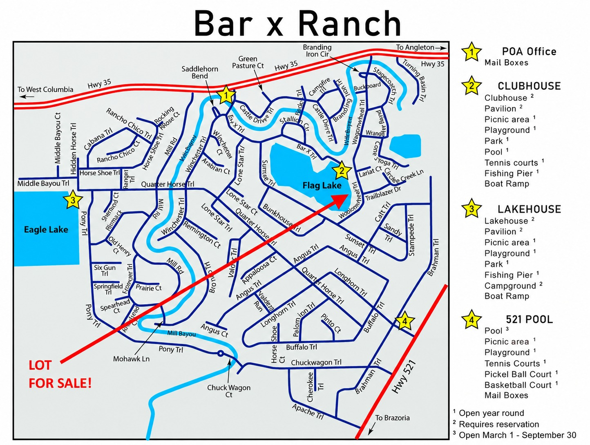
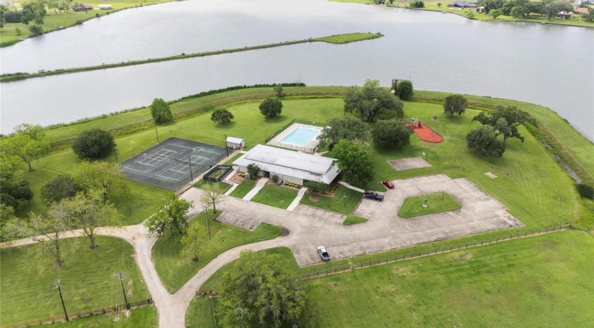
Left: the association's own amenity map, supplied with the
listing. Right: the 521 Pool complex.
Three corrections follow from the map. The two lakes have names — Flag Lake and
Eagle Lake, at opposite ends of the subdivision. What the USGS hydrography calls
“Flag Pond”, and what this document calls Flag Pond throughout, is Flag Lake to the
association and to anyone you speak to locally. The amenities sit at four separate nodes, not
two, and two of the three most useful carry conditions no earlier edition recorded.
Node
On
What is there
Conditions
1 · POA Office
Hwy 35, Saddlehorn Bend
Mail boxes
Year round
2 · Clubhouse
Flag Lake
Clubhouse, pavilion, picnic area, playground, park, pool, tennis courts,
fishing pier, boat ramp
Clubhouse and pavilion by reservation; rest year round
Pool, picnic area, playground, tennis courts, pickleball, basketball, mail boxes
Pool 1 March – 30 September only
What this changes for the fishing briefThere are two fishing piers and two boat ramps, not one of each — a pair on Flag Lake at
the Clubhouse and a pair on Eagle Lake at the Lakehouse. That is better than earlier editions
recorded. But note the conditions: the 521 pool is closed October to February, and the
clubhouse, lakehouse, pavilions and campground all require a reservation, so they are not
facilities you can simply walk into. The piers, ramps, parks, playgrounds and the Clubhouse pool are
the year-round, no-booking ones. Confirm the reservation rules and any fees against the POA resale
certificate — they are association policy and can change.
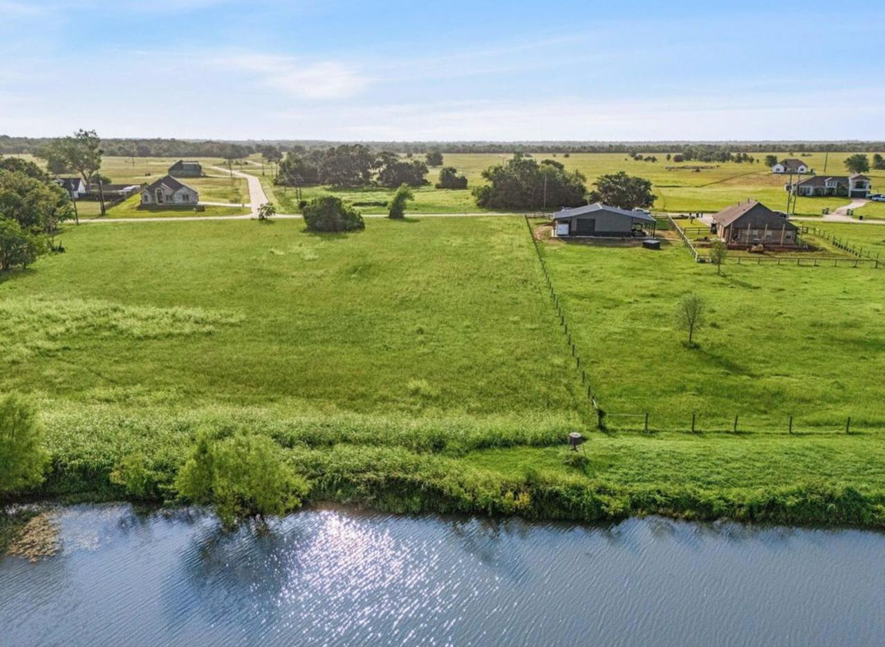
Association water from the shore, across cleared pasture.
Earlier editions carried this frame as unattributable. The de-duplication in Appendix D narrows it:
the frame was supplied only under the 808 Wagon Wheel Trail listing and under no other, which
points to Flag Lake beside Lots 4 and 5 rather than the Lots 2–3 pond this caption
previously suggested. That is provenance, not proof — there is still no location data, because
WhatsApp stripped the EXIF — so it is offered as the likely reading, not a certain one. Note
the marshy, reed-grown margin either way: that is the zone the TCEQ 75 ft absorption setback
in §20 measures back from, and it is not usable ground.
area contextA fishing pier at dusk — one of the two the amenity map records. Which of the two is not established.
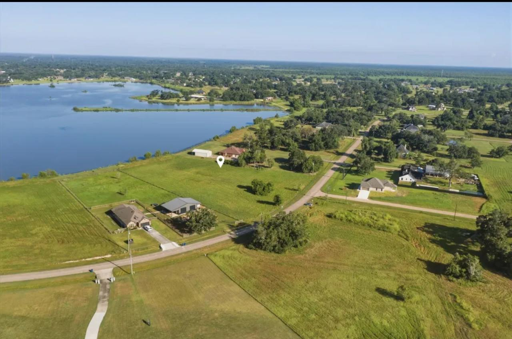
area contextFlag Lake from the air at its full 101.5 acres. This frame was supplied under three different addresses — see Appendix D.
When the bayou runs dry, and what is actually stocked
Mill Bayou is an intermittent stream. The National Hydrography Dataset classifies the named
reach beside Lot 1 as FCode 46003 — Stream/River, Intermittent: by definition it
carries water only part of the year. The reaches nearer Lots 2–5 are different things again — an
artificial path through an impounded pond on Lots 2 and 3, and a canal/ditch
(FCode 33600) 94–167 ft from Lots 4 and 5.
No gauge exists on Mill Bayou, and the nearby coastal-prairie gauges hold no discharge record, so
the dry window has to be derived rather than read off. Rainfall here is not strongly seasonal —
the driest month, February, still averages 79 mm. What drives a coastal-prairie channel dry is
evaporation exceeding rainfall. Thornthwaite potential evapotranspiration on this document's own
ERA5 normals gives:
Thornthwaite PET from ERA5 1991–2020 monthly normals at the parcels; heat index I = 113.3, a = 2.513, corrected for 29° N daylight. Annual balance is −9 mm — essentially break-even, which is why the channel recovers each winter.
Month
Rain (mm)
PET (mm)
Balance
Channel
May
89
137
−48
drying
June
107
176
−69
low / no flow
July
90
193
−103
driest — pools only
August
98
188
−90
driest — pools only
September
121
140
−19
recovering
October – April
96 avg
50 avg
+38 avg
flowing
Expect no flow late May to September
Worst in July and August, when evaporation runs roughly double
rainfall. In those months an intermittent reach becomes a chain of isolated pools, or a dry bed.
Only Lot 1 is exposed to this — its nearest open water is the impounded widening, which
holds, but the flowing bayou behind it does not. The ponds on Lots 2–5 are dammed and keep
water year-round, though levels fall.
Nothing here is state-stocked
Mill Bayou does not appear in TPWD's stocked water-body list, and
neither does Flag Pond. Even Bastrop Bayou, the named receiving watercourse and a listed TPWD
water body, reports “no stockings took place this year.” TPWD stocks public lakes,
ponds and bays; an intermittent bayou behind a private subdivision is none of those. The stocked
water here is the POA's own two lakes, stocked by the association on its terms — which is
also why no state licence or bag limit applies to them (§31 above).
What this means for the fishing brief: buy Lot 2, 3, 4 or 5 and
you have water outside the window all year. Buy Lot 1 for the bayou and you are buying a feature that
is a wooded channel for roughly four months of the summer. The POA lakes are the fishery in every case;
the bayou is scenery.
Bar X Ranch — Five-Lot Feasibility Portfolio v4.2 · Mohsin Chowdhury31 · Amenities & fishing · Pages 40–42 of 59
[[S:scorecard]]
32 · Scorecard against your brief
Twenty-one tests, weighted to what you said matters: gardening, hobby farming, quick access to
amenities, a good and developed neighbourhood, scenery and nature, and safety from flood and storm.
Green is good, amber is a compromise, red is a problem.
Test
Lot 1 1127 Saddle Horn
Lot 2 336 Wagon Wheel W
Lot 3 29 Broken Arrow
Lot 4 750 Wagon Wheel
Lot 5 808 Wagon Wheel
Garden soil Asa loam vs Pledger clay — §18
Excellent
Excellent
Poor
Poor
Poor
Room to garden acres of record
1.95 ac
1.00 ac
1.30 ac
1.00 ac
1.07 ac
Hobby farming — poultry restrictions bar livestock on all five — §19
Barred
Barred
Barred
Barred
Barred
Hobby farming — horses §3.15 formula on lot area
3 horses
2 horses
2 horses
2 horses
2 horses
Flood headroom lift needed at the best pad — §22
4.2 ft
0.7 ft
3.0 ft
3.8–5.2 ft
4.7 ft
Cost of the pad mid-case, calculated — §22
$48.6k
$20.4k
$37.5k
$44.7–58.2k
$53.2k
Land + pad + vertisol foundation the reproducible part of cost-to-build-ready — asking price, calculated pad at mid-case, and the $20k upcharge on the clay lots. Septic and the electric run are not yet lot-resolved, so they are excluded.
$131k
$65k
$107k
$123k
$173k
Rain ponding on the lot hydrologic group
Group B
Group B
Group D
Group D
Group D
Storm exposure all five TDI Inland I, 120 mph
Equal
Equal
Equal
Dam adjacent
Dam adjacent
Wildfire county Relatively Low throughout
Negligible
Negligible
Negligible
Negligible
Negligible
Foundation risk linear extensibility
LEP 4.5
LEP 4.5
LEP 19
LEP 19
LEP 19
Septic cost TCEQ class implied by permeability
$8–15k
$8–15k
$15–25k
$15–25k
$15–25k
Septic layout fits? field + 100% reserve + well + setbacks
Comfortable
Tight — 187 ft wide
Workable
Tight — 123 ft wide
Fails — 110 ft wide
Scenic beauty water body and frontage
Mill Bayou, ½ perimeter
Short pond frontage
Good pond frontage
101-acre lake
101-acre lake
Quiet distance to State Highway 35
0.09 mi — noisiest
0.37 mi
0.10 mi — noisy
1.03 mi — quietest
1.03 mi — quietest
Access to amenities all five within 1.5 mi of each other
Equal
Equal
Equal
+2–3 min
+2–3 min
Neighbourhood same tract, same POA, same ISD
Equal
Equal
Equal
Equal
Equal
Jurisdiction county only, or also a city ETJ
County only
Baileys Prairie ETJ
County only
County only
County only
Price asking
$82,500
$45,000
$49,000
$58,000
$100,000
Price per acre of record asking ÷ acres of record
$42,308
$45,000
$37,692
$58,000
$93,458
Value against county appraisal premium or discount
+26.9%
+25.0%
-5.5%
+16.0%
+87.7%
Green / amber / red
11 / 3 / 4
9 / 5 / 4
5 / 7 / 6
4 / 6 / 10
4 / 2 / 14
Conclusion
Buy Lot 2, 336 Wagon Wheel Trail W, at $45,000, unless the extra acre on Lot 1 is worth
about $66,000 to you. Lot 2 has the better soil, by far the least fill, the lowest price, and the lowest total cost to reach build-ready of the five. Its weakness is size, and only you can price
that.
If you want the acreage, buy Lot 1 and open at $65,000 — the county's appraised value —
going to about $72,000. At the $82,500 ask you are paying a 26.9% premium to the county's own number
on a lot that also needs 1,416 cubic yards of fill.
Do not buy Lots 3 or 4. The Pledger clay costs more in septic and
foundation than the land saves; Lot 4 needs the deepest pad, barely has the width for it, and abuts
a dam with no published hazard rating.
Bar X Ranch — Five-Lot Feasibility Portfolio v4.2 · Mohsin Chowdhury32 · Scorecard · Pages 43–44 of 59
[[S:corrections]]
33 · What changed, edition by edition
The original generated portfolio, the v2 rebuild, and this edition. Only the items where the answer
actually moved are listed.
#
Original portfolio said
v2 corrected it to
v3 establishes
1
No parcel identifiers at all
Same — none available
PID, geo ID, legal description, deed reference for all five
2
Lot 29 ~1.0 ac "est."
Unresolved
1.30 ac of record — $/acre falls to $37,692
3
750 Wagon Wheel 1.0 or 1.27 ac
Unresolved
1.00 ac of record; the 1.27 figure is wrong
4
Lot 29 is interior
Repeated as interior
Waterfront — 7 of 13 boundary vertices within 60 ft of a 12.6 ac pond
5
Panel 48039C0605K
Repeated as verified
Panel 48039C0420K, eff. 30 Dec 2020
6
BFE ~24 ft; build at grade
Flagged the range, kept 24 ft as plausible
Nearest published BFE line is 28 ft NAVD88 at every lot
7
Natural ground 28–30 ft
Repeated, flagged unverified
24–28 ft from county LiDAR — so 2–6 ft of fill is mandatory
8
Fill "minimal"
$0–$8,000, optional
$12,000–$45,000, and not optional
9
Soil class unknown
Unknown; assumed Class III–IV
Asa loam on Lots 1–2, Pledger vertisol on Lots 3–4 — a 43× permeability difference
10
No foundation risk noted
Not noted
LEP 19 on Lots 3–4 — post-tensioned or piered design
11
Minimum dwelling 1,800 sq ft
Repeated, flagged unverified
1,100 sq ft in the recorded instrument
12
"ACC Rev 2" governs all four
Flagged as doubtful
Three different recorded instruments — 1515/679, 1532/471, 84-29/885
13
Silent on animals
Silent
Livestock barred except horses; one horse barn only — poultry very likely prohibited
14
No tax at all
County + CBISD + hospital + drainage districts
County + CBISD + ESD only — no hospital, drainage or college district
15
Carry not modelled
$5,050–$5,750/yr on four lots
$5,848–$6,360/yr on five, $1,350–$1,730 on one
16
Windstorm omitted
TWIA average $2,541; WPI-8 required
TDI Inland I, 120 mph — the zone boundary follows SH 35
17
Jurisdiction unstated
Unincorporated county
Lot 2 is inside the Baileys Prairie ETJ; the other four are not
18
Surfside 20 min
~30 min
42 min by road
19
10 catfish/day as state law
Shown to be impossible as state law
Confirmed a POA house rule at most
20
No dam or levee noted
Not noted
Lot 4 abuts Flag Lake Levee (NID TX06298), unrated; Lot 1 downstream of TX01759
21
Cheapest waterfront framing
Ranked 1127 Saddle Horn cheapest per acre
All five are waterfront; Lot 29 is cheapest per acre
22
Total 9 pages, no drawings
12 sections, no drawings
True-scale plans and terrain sections for all five lots
23
No photography
Seller frames used as supplied, by filename
71 files audited to 42 distinct scenes — filenames identify listings, not parcels; Lot 3 given a recorded-boundary aerial; Lot 2 still has no photograph at all (Appendix D)
The full claim-by-claim audit of the original document remains
in docs/AUDIT.md. The evidence trail for everything new in this edition,
including the exact service queries, is in docs/EVIDENCE.md.
Bar X Ranch — Five-Lot Feasibility Portfolio v4.2 · Mohsin Chowdhury33 · Corrections · Page 45 of 59
[[S:next]]
34 · What to do next, in this order
Nine of these cost almost nothing and between them they resolve every remaining
material unknown. Do them before you make an offer, not after.
Ask the POA the poultry question in writing. “May I keep a small number of chickens
and ducks, and may I build a coop and a greenhouse?” If the answer is no and that is
unacceptable, stop here and look at unrestricted acreage instead — everything below becomes
moot. Free. One email to office@barxranch.org.
Pull the recorded restrictions for the specific lot from the Brazoria County Clerk —
1515/679 for Sections 1 lots, 1532/471 for Section 2, 84-29/885 for Section 16 — plus a POA
resale certificate showing dues, transfer fees and any assessments.
Under $100.
Confirm Lot 29's identity, and its frontage. Its situs of record is
“HIGHWAY 35” with no street number. Verify the listing refers to PID 186219
and not another Section 16 lot. In the same call, ask the county whether the ~10 ft of
frontage on the Broken Arrow Trail cul-de-sac (§8) satisfies the minimum frontage for a
building permit and a driveway culvert permit. If it does not, nothing else about this lot
matters. Free — BCAD, the listing agent and the permit office.
Order an OSSF site and soil evaluation on the shortlisted lot. This is the highest-value
money in the project: it converts §18's survey-scale inference into the permit-governing soil
class, and it swings the septic budget by up to $17,000.
$350–$600.
Request a written BFE determination per lot from Brazoria County Floodplain & 911
Administration, 451 N Velasco Ste 210, Angleton TX 77515 · 979-864-1295. Ask which cross-section
governs the lot — Mill Bayou governs Lot 1 and it is a different watercourse from the one
governing Lots 2 and 3. Free.
Get three quotes for the electric service extension, per lot. This is a $0–$25,000 line
and the utility will tell you over the phone. Free.
Ask TCEQ Dam Safety about Flag Lake Levee (NID TX06298) — hazard classification, condition
and inspection history — if Lot 4 is still under consideration. And about Bar X Development Dam
(TX01759) for Lot 1. Free.
Confirm the school attendance zone for the specific lot with Columbia-Brazoria ISD, and
confirm broadband availability at the address with the providers. Neither can be settled from a
desk, and both shape daily life. Free.
Confirm the TDI windstorm zone for the parcel against TDI's own Brazoria County map. §24
places all five in Inland I, but the dividing line follows SH 35 and Lots 1 and 3 are within 530
ft of it. Free.
Commission a drone pass on the shortlisted lot, and ask the agent which parcel each
supplied photograph shows and how they know. Lot 2 has no photograph at all — see Appendix D — so
there it is the only way to see the ground before you commit. On Lot 3, brief the
surveyor to dimension the cul-de-sac frontage first (§8). $150–$400.
Order a boundary and topographic survey on the lot you intend to buy, then test a real
2,400–2,800 sq ft footprint at 30 ft finished floor against the septic field, the 100% reserve,
the well at 100 ft, the 75 ft water setback and your garden. $1,500–$3,500.
Get TWIA windstorm and Risk Rating 2.0 flood quotes on the actual proposed structure, and
price excess flood cover above the $250,000 NFIP building cap.
Then make the offer, anchored on the county appraised value, and only then commission
design.
Total cost of resolving every remaining unknown
Roughly $2,400–$4,800 and a fortnight, against a build of $505,000–$950,000. Steps 1 to 9 cost
under $700 between them and would change the recommendation in this document if any of them came back
differently.
Bar X Ranch — Five-Lot Feasibility Portfolio v4.2 · Mohsin Chowdhury34 · Next steps · Page 46 of 59
[[S:sources]]
Sources, limitations and sign-off
Primary sources used in this edition
Source
Used for
Brazoria County public ArcGIS — general/Parcels, general/Floodplain, general/LiDAR,
general/Taxing_Entities, general/Legal_and_Development, general/Roads, general/Community_Features
Parcel record, FEMA zone and FIRM panel per parcel, published BFE lines, 1 ft elevation
contours, taxing districts, recorded plats and restriction references, street centrelines,
school locations
USGS 3DEP 1 m digital elevation model
The A–B terrain profiles in §13–17
USDA NRCS SSURGO, Brazoria County soil survey
Soil series, texture, permeability, shrink-swell, drainage class, hydrologic group (§18)
Bar X Ranch declaration of restrictions as recorded (Deed Vol. 1679, Pg. 695)
Permitted structures, livestock, dwelling size, fences, setbacks, lot maintenance (§19)
30 TAC §295.91 (TCEQ OSSF)
Wastewater flow, tank sizing, loading rates,
separation distances (§20)
Brazoria County building permit fee schedule, permit application, floodplain
administration
Permit cost, the 24-inch freeboard standard, contact route
FEMA — National Risk Index (Dec 2025), LOMA/LOMR-F guidance, FIS 48039CV001A
Hazard ratings (§26), map-amendment routes, study effective date
Texas Department of Insurance — windstorm zone map and community list for Brazoria
County
Inland I 120 mph determination, WPI-8 obligation (§24)
TWIA — published rates and liability report
Windstorm premium (§24)
TPWD — private-water fishing exemption, freshwater bag and length limits
Correcting the fishing claims (§31)
US Census Bureau — ACS 2024 five-year estimates, tract 6625
Demographics, income, tenure, Indian population (§30)
ERA5 reanalysis, daily 1991–2020 at the parcels
Climate normals in Celsius, frost dates, growing season (§25)
OpenStreetMap and OSRM; National Inventory of Dams
Water-body geometry and frontage measurement, road distances and drive times, dam records
Source content has been paraphrased and summarised rather than quoted at length, except
for short quotations from the recorded deed restrictions in §19, where the exact wording is the point.
The full register, including everything that could not be verified, is in
docs/SOURCES.md; the machine-retrieved evidence and the exact queries
are in docs/EVIDENCE.md.
What remains unverified
Site-specific BFE in writing for any lot · the TCEQ soil class from a site evaluation ·
distance to three-phase power at each lot · the recorded restriction instrument for each specific
section · POA dues, mowing and transfer fees from a resale certificate · ESD 1 and 2 tax rates ·
Angleton Levee accreditation status · Flag Lake Levee hazard class and condition · Brazoria County CRS
class · whether the POA permits poultry in practice · broadband availability at the addresses ·
current school attendance zones and campus performance.
Disclaimer
This is an independent desktop screening study prepared from published regulation, public records and
open government data. It is not a survey, an engineering or geotechnical opinion, a flood
determination, an elevation certificate, insurance advice, legal advice, tax advice or an appraisal,
and it is not a substitute for the licensed professionals and the written county determinations named
in §34. No lot has been visited, surveyed or soil-tested. Elevations derive from remote-sensing models
and are indicative only. Figures marked estimate are planning ranges;
figures marked unverified derive from third-party listing copy or a
superseded edition. Prices, tax rates, insurance premiums and listing status change without notice.
Do not rely on any figure in this document for a purchase, financing or construction decision without
independent confirmation.
Prepared as required for
Mohsin Chowdhury
on 17 September 2026
Bar X Ranch — Five-Lot Feasibility Portfolio · version 4.2 ·
59 pages · supersedes v4.0 and v3.5, v3.0 of 11 September 2026, v2.0 of 10 September 2026, and the original generated portfolio.
Subject parcels: PID 183667, 183367, 186219, 183332 — Bar X Ranch Sections 1, 2 and 16,
unincorporated Brazoria County, Angleton, Texas 77515.
Bar X Ranch — Five-Lot Feasibility Portfolio v4.2 · Mohsin ChowdhurySources & sign-off · Page 47 of 59
[[S:brief]]
Appendix A · Engagement brief — what was asked, and where it is answered
The requirements that produced this document, recorded so the artifact can be checked
against the instruction rather than taken on trust. A.1 is the original brief as raised;
A.2 is the later instruction to audit and rebuild the first attempt at answering it;
A.3 covers delivery. Two session messages are excluded because neither bears on scope: one
session-control instruction, and one question about where the output files were located.
A.1 · The brief as raised
Subject properties
Opened on 750 Wagon Wheel Trl, then expanded to four lots and later to a fifth, all in the Bar X Ranch
subdivision, Angleton, Texas 77515. Acreages below are as they were stated at the time; the acreage of
record for each parcel is established in §3.
Lot as raised
As stated then
Now identified
1127 Saddle Horn Bnd Lot 84
1.95 AC, waterfront
PID 183667 — §3
750 Wagon Wheel Trl
1.0–1.27 AC
PID 183367 — §3
336 Wagon Wheel Trl W
1.0 AC, Lot 167, waterfront
PID 186219 — §3
LOT 29 Broken Arrow Trl
Bar X Ranch Sec 16
PID 183332 — §3
The three core questions, and the answers this edition reaches
Question as asked
Answer
Where
Can I build a five-bedroom home on these lots?
Yes — on four of the five. On 808 Wagon Wheel the pad does not fit as drawn. And not at grade anywhere: Every lot needs an engineered pad of
2–6 ft to clear the freeboard standard, and the septic system, not the house, is what
governs how much of each lot is usable. Cost to reach build-ready separates the lots by about
$74,000.
§20–§22
Can I fish there as a hobby?
Yes. Two stocked POA lakes with pier and boat ramp on site, plus public water nearby.
The licence and bag-limit position was misstated in the original and is corrected.
§29, §31
Can I have no flood risk at all — is zero achievable?direct answer
No. Not on any of these five lots, and not by any means available to a buyer. All five
sit in a mapped Special Flood Hazard Area behind a non-accredited levee. Elevating above the base
flood elevation reduces depth and can remove the insurance mandate, but it does not remove the
mapping, the pluvial ponding risk on flat clay, or the surge and levee exposure. Zero flood risk
was not achievable here, and the original document's implication that it nearly was is the single
claim this review most firmly rejects.
§1, §11, §26
Information requested
Area
Asked for
Answered in
Property records & subdivision
Official records, lot dimensions, ownership, tax, subdivision context; POA fees, deed
restrictions and ACC guidelines
§3, §4, §19, §23
Flood risk & BFE
FEMA zone determination; flood history for Angleton and Brazoria County; a reasoned
no-risk assessment; height of the land above BFE; the exact BFE per lot; the FIRM panel and the
FIS profile for the governing watercourse
§11–§16, §26
Buildability for five bedrooms
Land-use position, utilities (well and septic), POA and county requirements, septic sizing
for 5BR, garage, exterior materials, permit fees, elevation certificate and the freeboard
standard
§18–§22, §27
Fishing
On-site POA amenities, species stocked, lake rules, licence position; off-site options
including the Bastrop Bayou public pier, the Brazos River and Surfside
This document, with a full source register and an evidence log.
Colourful single-PDF portfolio covering all the lots
Delivered
Rendered to A4 at true scale; supersedes the original generated artifact.
BFE diagram — ground ~28 ft vs BFE ~24 ft vs finished floor 26 ft
Supersededpremise moved
Those three numbers no longer hold, so drawing them would mislead. Replaced by measured
per-lot terrain profiles and a calculated flood-headroom and fill figure for each lot.
FIRM panel image and BFE extraction
Partly delivered
Zone, panel and the nearest published BFE line were pulled per parcel from the county service
— but the panel is 48039C0420K, not the 48039C0605K named in the request, so the
FIS profile to read is not the one originally identified. No panel image is embedded.
Draft e-mail to the county floodplain administrator requesting an official BFE
determination letter
Delivered
Five drafts, one per parcel, rewritten from scratch against the corrected panel and the
per-parcel record. The original artifact's drafts were truncated and one had no addressee; these
replace them. Plain text in letters/EMAIL-DRAFTS.md; the questions are
set out in Appendix B.
PDF request letter for 750 Wagon Wheel Trl
Delivered
Five PDFs in letters/ — one
formal A4 letter per parcel, plus a combined document carrying a covering letter and all five.
Each is generated from the parcel record and the terrain model, so they cannot drift from this
report. See Appendix B.
Three further individual BFE request PDFs (1127, 336, Lot 29), plus a combined four-lot
letters PDF
Delivered
Where the premise of the original request has since moved
Four items in the brief were framed on figures that the county record has since contradicted. They
are recorded above as asked, not as corrected, so the change is visible:
the FIRM panel is 48039C0420K, not 48039C0605K — which also changes which FIS profile
governs; the nearest published BFE is 28 ft NAVD88, not ~24 ft, and county LiDAR puts natural
ground at 24–28 ft, so the land is not 4 ft clear of the base flood and a pad is mandatory;
“zoning 0140” is a county appraisal land-use code, not zoning — there is no
county zoning here and the recorded deed restrictions govern; and the freeboard standard is a
single requirement of 24 inches above BFE, which is the two feet, not 24 inches plus a further
two feet.
A.2 · The review brief — auditing the first attempt
Requirement
How it was discharged
Where
Read and understand it
The generated portfolio was read in full, including both elevation diagrams, the cost
schedule and all four county e-mail drafts.
Basis of this edition
Find inconsistencies
Internal contradictions identified: per-acre pricing computed on two different acreage
bases; a soft-cost total that does not equal its own line items; a fill allowance that
contradicts the stated ground and floor elevations; two diagrams drawing the finished floor
below natural grade; fill and a LOMA recommended together though they are mutually exclusive;
dues stated for one lot and omitted for three; three of four e-mail drafts truncated mid
sentence; and "AD/AE" used to mean both a flood zone and a study cross-section.
The original "all four buildable, cost minimal" verdict is rejected on five grounds: the
document neutralises its own flood warning; its conclusion depends on selecting the bottom of a
2.7 ft BFE range without saying why; one generic flood analysis is presented as four
lot-specific ones; the waterfront lots it recommends are the weakest for this build once
slope to water and TCEQ separation distances are applied; and no ranked recommendation is ever
issued. This edition takes a position and names a lot.
Only one document was supplied, so the artifact's own sections were compared against each
other and against primary sources — which is where several of the contradictions surfaced.
Still open: a second document — an appraisal, survey, seller's disclosure or the POA
resale certificate — would extend this materially.
Absent from the original and supplied here: the house construction cost; windstorm insurance
and the WPI-8 obligation; property tax and the taxing districts; POA dues, mowing and transfer
fees; the septic system installation itself; water treatment; survey; driveway culvert; electric
service extension; propane; TCEQ separation distances; parcel identifiers; the school district;
soil classification; terrain and flood headroom per lot; and what living there is actually
like.
Corrected against primary sources rather than assertion: the county parcel, floodplain,
LiDAR and taxing services; USGS 3DEP; NRCS SSURGO; the recorded declaration of restrictions;
TCEQ OSSF rules; the county fee schedule and freeboard standard; FEMA; TDI and TWIA; TPWD;
and the Census. Every figure carries a provenance mark.
Rebuilt from a generated single-page application into a paginated A4 report with true-scale
drawings. Removed the working notes left in the body, the styling debug string, the raw
data-feed artefacts, the blank map, the title block printing over a diagram, and five
repetitions of an identical badge row. Added numbered pages, a contents list with page
references, provenance marking on every material figure, sourced citations, a disclaimer and a
sign-off.
Done — printed from this HTML to A4 at true scale.
Commit the PDF alongside
Done — committed next to the HTML source, with the superseded editions and the
original generated portfolio retained for comparison.
Merge it to the main branch
Done — merged by pull request.
Append this brief as a reference, excluding the irrelevant items
Done — this appendix. Two out-of-scope session messages excluded, as noted above.
How to read this appendix
It is a traceability record, not a summary of findings. Where a row is marked partly delivered
or partly open, the requirement has not been fully discharged and the reason
is stated rather than left implied. Two remain: no FIRM panel image is embedded, and no second
document was ever supplied to compare this one against. Everything else asked for has now been
produced. The substantive conclusions are in §1–§4 and the scorecard at §32.
Bar X Ranch — Five-Lot Feasibility Portfolio v4.2 · Mohsin ChowdhuryAppendix A · Engagement brief · Pages 48–49 of 59
[[S:letters]]
Appendix B · County correspondence — what to send, and what to ask
Nothing in this report substitutes for the county stating the governing elevation in
writing. These are the requests that obtain it: one per parcel, because the questions differ between
them. Every figure quoted in them is read from the parcel record and the terrain model, so the
correspondence cannot drift out of step with this document.
B.1 · The documents
File
What it is
letters/BFE-Request-1127-Saddle-Horn-Bend.pdf
A formal A4 request letter for a single parcel, identifying it by PID, GEO ID,
legal description, plat and centroid, stating the flood and terrain position as understood for
correction, and asking the questions in B.2 and B.3. Three pages each. Send one, or send the
combined document.
letters/BFE-Request-336-Wagon-Wheel-Trail-W.pdf
letters/BFE-Request-Lot-29-Broken-Arrow-Trail.pdf
letters/BFE-Request-750-Wagon-Wheel-Trail.pdf
letters/BFE-Request-808-Wagon-Wheel-Trail.pdf
letters/BFE-Request-All-Five-Lots.pdf
A covering letter explaining that one of the five will be purchased, a summary table of all
five parcels, then all five letters in sequence. Seventeen pages. Use this if the office would
rather answer once.
letters/EMAIL-DRAFTS.md
The same five requests as plain-text e-mails with subject lines, addressed and signed, ready
to send as they stand.
tools/letters.py
Regenerates all of the above from the parcel and terrain data.
Where to send it.Joe K. Ripple, Floodplain Administrator, Brazoria County Floodplain & 911 Administration, 451 North Velasco, Suite 210 — the Courthouse West Annex, 2nd floor, Room 210 — Angleton, Texas 77515. Direct (979) 864-1272; department (979) 864-1295 or (281) 756-1295. The department publishes no e-mail address — Engineering publishes engineer-GIS@ and engineer-development@ aliases, Floodplain lists telephone numbers only. So the practical route is to telephone the direct line first, ask where to send a written request, and post or hand-deliver the letter to Room 210. The e-mail drafts in Appendix C are written to be pasted once you have an address to send them to. The same office administers floodplain determinations, the combined
development/building permit and 911 addressing, which is why the addressing question in B.3 goes here
rather than elsewhere.
B.2 · The ten questions asked for every parcel
Question
Why it decides something
1 · Written base flood elevation
The whole cost model turns on it. Ask for the source too — FIS profile and
cross-section, or the published BFE line — and the interpolation method, since the nearest
published line lies 1,010–2,477 ft away depending on the parcel.
2 · Regulatory floodway
Floodway, as against flood fringe, would restrict or prevent fill and change the answer
entirely.
3 · Minimum finished-floor elevation
Confirms the 24-inch freeboard is a single requirement, not 24 inches on top of a further two
feet — the arithmetic the original brief had wrong.
4 · Levee status relied upon
The Zone AE mapping rests on the Angleton Levee being non-accredited. Accreditation, or a
pending map revision, moves the zone and the premium.
5 · Fill, no-rise and drainage
Every parcel needs a pad. Whether that triggers no-rise certification, compensatory storage
or drainage review is a cost and a programme risk.
6 · Map amendment on natural grade
A LOMA is only available on natural grade. Placing fill forces a LOMR-F instead, which is a
different application with a FEMA fee.
7 · Permit route and fees
Confirms the single combined permit, the residential fee basis, and that contractors must hold
IRC registration before it issues.
8 · Elevation certificate
When it is required and in what form.
9 · Jurisdiction
A 77515 mailing address does not establish that the parcel is unincorporated. If it is inside
Angleton, the city permits instead and the standards differ.
10 · Damage and loss history
Any record of flooding, substantial damage or repetitive loss on the parcel or its street.
B.3 · What each letter asks in addition
Parcel
Additional questions
1127 Saddle Horn Bend PID 183667
Which flooding source governs, given Mill Bayou at about 112 ft, unnamed water at about 38 ft,
and the nearest published BFE line 1,594 ft away; and any setback, fill restriction or easement on
the water-facing portion.
336 Wagon Wheel Trail W PID 183367
Whether a pad of only about 0.7 ft is acceptable and what evidence of existing grade the county
requires — this parcel has the highest buildable ground of the five; and whether a recorded
drainage easement crosses it.
Lot 29 Broken Arrow Trail PID 186219
The correct address of record, since the situs of record reads HIGHWAY 35 while the parcel is
marketed as Broken Arrow Trail; and how the BFE is derived at 2,477 ft from the nearest published
line, the greatest separation of the five.
808 Wagon Wheel Trail PID 183331
The building lines of record and whether retaining structures or certified steeper side
slopes are acceptable — at 490 ft × 110 ft the width is about 6 ft short of a
compliant pad; the Flag Lake Levee at 21 ft; and which acreage the county treats as controlling,
the 1.07 of record or the 0.964 its own polygon computes.
750 Wagon Wheel Trail PID 183332
The Flag Lake Levee at about 11 ft — accreditation status, hazard classification and
condition, whether the parcel sits in a dam-failure inundation area, and any easement or
construction restriction; the building lines of record, since the narrow dimension leaves roughly
12 ft of spare width against the assumed pad; and any recorded drainage easement.
Send these before you make an offer, not after
A written determination costs nothing but time, and it settles the one number — the governing
base flood elevation — on which the pad, the foundation, the insurance and the difference between
these five parcels all depend. The letters deliberately state our figures as
provisional and invite correction, because the object is to be told the right number rather than to
have ours confirmed.
Bar X Ranch — Five-Lot Feasibility Portfolio v4.2 · Mohsin ChowdhuryAppendix B · County correspondence · Pages 50–51 of 59
[[S:emails]]
Appendix C · The five draft e-mails
The five requests in full, exactly as they stand in
letters/EMAIL-DRAFTS.md — addressed, signed and ready to send without
editing. They are reproduced here so this document is complete on its own, and they are generated
from the same code that writes that file, so the two cannot fall out of step. Each draft begins on
its own page overleaf.
Where they go
Office
The Floodplain Administrator, Brazoria County
Floodplain & 911 Administration
Address
451 North Velasco, Suite 210, Angleton, Texas 77515
Telephone
(979) 864-1295 or (281) 756-1295
Reply to
mms221@gmail.com · (702) 582-5724, Pacific hours
Subject lines
Parcel
Subject
Lot 1 · 1127 Saddle Horn Bend
BFE determination request — 1127 Saddle Horn Bend (PID 183667), Bar X Ranch, Angleton
Lot 2 · 336 Wagon Wheel Trail W
BFE determination request — 336 Wagon Wheel Trail W (PID 183367), Bar X Ranch, Angleton
Lot 3 · Lot 29 Broken Arrow Trail
BFE determination request — Lot 29 Broken Arrow Trail (PID 186219), Bar X Ranch, Angleton
Lot 4 · 750 Wagon Wheel Trail
BFE determination request — 750 Wagon Wheel Trail (PID 183332), Bar X Ranch, Angleton
Lot 5 · 808 Wagon Wheel Trail
BFE determination request — 808 Wagon Wheel Trail (PID 183331), Bar X Ranch, Angleton
How to use them
Send the e-mails rather than the letters first: it is faster, it creates a written record, and it
gives the office something to reply to directly. The matching PDFs in letters/
are there if the office asks for a formal written request, and the combined document covers all five
parcels in one submission. Each draft states our figures as provisional and invites correction — the
object is to be told the governing base flood elevation, not to have ours confirmed. Keep every reply:
a written determination from the county is the document that settles the pad, the foundation, the
insurance and the difference between these five parcels.
Before sending
The drafts are dated 13 September 2026. If you send them later, change DATED
in tools/letters.py and re-run it — that regenerates these drafts, this
appendix and all six PDFs together.
C.1 Lot 1 — 1127 Saddle Horn Bend
PID 183667 · 1.95 ac of record
Subject: BFE determination request — 1127 Saddle Horn Bend (PID 183667), Bar X Ranch, Angleton
To: Joe K. Ripple, Floodplain Administrator
Brazoria County Floodplain & 911 Administration
451 N Velasco, Suite 210 (Courthouse West Annex, 2nd floor), Angleton TX 77515
Direct (979) 864-1272 - department (979) 864-1295 / (281) 756-1295
Dear Floodplain Administrator,
I am evaluating the vacant parcel below for a single-family residence and would be
grateful for a written determination of the base flood elevation that applies to it.
I am not yet under contract; I am trying to establish the regulatory position before
committing to a purchase or a design.
Marketed as 1127 Saddle Horn Bend, Angleton, TX 77515
Situs of record 1127 SADDLE HORN BEND
Account / PID 183667 (GEO ID 1534-0084-000)
Legal BAR X RANCH SEC 2 (A0038 J B BAILEY) BLK 1 LOT 84 ACRES 1.95
Acreage of record 1.95 acres
Subdivision Bar-X Ranch #2, plat 16/119 (17 Sep 1980)
Centroid 29.141219, -95.559141
My present understanding, which I would be glad to have corrected:
- Zone AE, FIRM panel 48039C0420K effective 30 December 2020
- Nearest published BFE 28.0 ft NAVD88, about 1,594 ft from the parcel
- Natural ground about 24.2-26.8 ft NAVD88 (LiDAR / USGS 1 m DEM)
- Assumed finished floor 30.0 ft NAVD88 = BFE + 24 in freeboard
- Implied pad lift about 4.2 ft
Could you please confirm:
1. Written base flood elevation
The base flood elevation the county applies to this parcel, in feet
NAVD88, and the source used to derive it — the Flood Insurance Study
profile and cross-section, or the published BFE line, with the method of
interpolation if one is used.
2. Regulatory floodway
Whether any part of the parcel lies within the regulatory floodway as
opposed to the flood fringe.
3. Minimum finished-floor elevation
Confirmation of the minimum finished-floor elevation the county will
require. Our understanding is the base flood elevation plus 24 inches of
freeboard, being a single requirement of 24 inches rather than 24 inches
in addition to a further two feet. Please correct that if it is wrong,
and state any additional local standard that applies.
4. Levee status relied upon
The accreditation status of the Angleton Levee as relied upon in the
current mapping, and whether any Letter of Map Revision, physical map
revision or preliminary FIRM is pending that would change the zone or
the base flood elevation for this parcel.
5. Fill, no-rise and drainage
Whether raising a building pad on this parcel requires a no-rise
certification, compensatory storage, or a drainage review, and
confirmation that a Fill and Grading permit is required in addition to
the development permit.
6. Map amendment on natural grade
Whether the county considers this parcel a candidate for a Letter of Map
Amendment on natural grade, and confirmation that placing fill under the
structure would instead require a Letter of Map Revision based on fill.
7. Permit route and fees
Confirmation that a single combined Development and Building Permit
applies, the fee basis for a single-family residence in a flood zone,
and that all contractors must hold county IRC registration before the
permit issues.
8. Elevation certificate
At what stage an elevation certificate is required, and the form the
county accepts.
9. Jurisdiction
Confirmation that this parcel is in unincorporated Brazoria County and
not within the city limits or extraterritorial jurisdiction of Angleton,
so that the county is the permitting authority.
10. Substantial-damage and repetitive-loss history
Any record the county holds of flooding, substantial damage or
repetitive loss affecting this parcel or its immediate street.
11. Governing watercourse
Mill Bayou lies about 112 ft from this parcel and an unnamed water body
about 38 ft from it, while the nearest published BFE line sits roughly
1,594 ft away — the greatest separation of the four parcels. Please
confirm which flooding source governs here, and whether the BFE for this
parcel is taken from the Mill Bayou profile or interpolated from a more
distant section.
12. Water-body setback and fill limits
Please confirm any county setback, fill restriction or easement applying
to the portion of the parcel adjoining the water, and whether fill is
permitted within it.
If a fee or a formal application is needed for a written determination, please tell me
the amount and the form and I will submit it promptly.
I am writing from out of state, so a reply to this address is most helpful; I am also
reachable on (702) 582-5724 during Pacific business hours.
With thanks,
Mohsin Chowdhury
3731 Bright Aquarius Lane, Henderson, Nevada 89052
(702) 582-5724 · mms221@gmail.com
C.2 Lot 2 — 336 Wagon Wheel Trail W
PID 183367 · 1.0 ac of record
Subject: BFE determination request — 336 Wagon Wheel Trail W (PID 183367), Bar X Ranch, Angleton
To: Joe K. Ripple, Floodplain Administrator
Brazoria County Floodplain & 911 Administration
451 N Velasco, Suite 210 (Courthouse West Annex, 2nd floor), Angleton TX 77515
Direct (979) 864-1272 - department (979) 864-1295 / (281) 756-1295
Dear Floodplain Administrator,
I am evaluating the vacant parcel below for a single-family residence and would be
grateful for a written determination of the base flood elevation that applies to it.
I am not yet under contract; I am trying to establish the regulatory position before
committing to a purchase or a design.
Marketed as 336 Wagon Wheel Trail W, Angleton, TX 77515
Situs of record 336 WAGON WHEEL TRAIL
Account / PID 183367 (GEO ID 1533-0167-000)
Legal BAR X RANCH (A0038 J B BAILEY) LOT 167 ACRES 1.
Acreage of record 1.0 acres
Subdivision Bar-X Ranch #1, plat 16/104 (9 Jun 1980)
Centroid 29.140524, -95.541472
My present understanding, which I would be glad to have corrected:
- Zone AE, FIRM panel 48039C0420K effective 30 December 2020
- Nearest published BFE 28.0 ft NAVD88, about 1,010 ft from the parcel
- Natural ground about 24.9-29.4 ft NAVD88 (LiDAR / USGS 1 m DEM)
- Assumed finished floor 30.0 ft NAVD88 = BFE + 24 in freeboard
- Implied pad lift about 0.7 ft
Could you please confirm:
1. Written base flood elevation
The base flood elevation the county applies to this parcel, in feet
NAVD88, and the source used to derive it — the Flood Insurance Study
profile and cross-section, or the published BFE line, with the method of
interpolation if one is used.
2. Regulatory floodway
Whether any part of the parcel lies within the regulatory floodway as
opposed to the flood fringe.
3. Minimum finished-floor elevation
Confirmation of the minimum finished-floor elevation the county will
require. Our understanding is the base flood elevation plus 24 inches of
freeboard, being a single requirement of 24 inches rather than 24 inches
in addition to a further two feet. Please correct that if it is wrong,
and state any additional local standard that applies.
4. Levee status relied upon
The accreditation status of the Angleton Levee as relied upon in the
current mapping, and whether any Letter of Map Revision, physical map
revision or preliminary FIRM is pending that would change the zone or
the base flood elevation for this parcel.
5. Fill, no-rise and drainage
Whether raising a building pad on this parcel requires a no-rise
certification, compensatory storage, or a drainage review, and
confirmation that a Fill and Grading permit is required in addition to
the development permit.
6. Map amendment on natural grade
Whether the county considers this parcel a candidate for a Letter of Map
Amendment on natural grade, and confirmation that placing fill under the
structure would instead require a Letter of Map Revision based on fill.
7. Permit route and fees
Confirmation that a single combined Development and Building Permit
applies, the fee basis for a single-family residence in a flood zone,
and that all contractors must hold county IRC registration before the
permit issues.
8. Elevation certificate
At what stage an elevation certificate is required, and the form the
county accepts.
9. Jurisdiction
Confirmation that this parcel is in unincorporated Brazoria County and
not within the city limits or extraterritorial jurisdiction of Angleton,
so that the county is the permitting authority.
10. Substantial-damage and repetitive-loss history
Any record the county holds of flooding, substantial damage or
repetitive loss affecting this parcel or its immediate street.
11. Highest natural ground of the four
County LiDAR puts natural ground here between about 24.9 and 29.4 ft
NAVD88, averaging about 28.1 ft — so the calculated lift to a compliant
pad is only about 0.7 ft. Please confirm whether a pad of that order is
acceptable, and what the county will require as evidence of existing
grade.
12. Recorded drainage easements
The restrictions of record for this section reference drainage easements
at 1712/500. Please confirm whether any mapped drainage easement crosses
this parcel and how it constrains the building envelope or the placement
of fill.
If a fee or a formal application is needed for a written determination, please tell me
the amount and the form and I will submit it promptly.
I am writing from out of state, so a reply to this address is most helpful; I am also
reachable on (702) 582-5724 during Pacific business hours.
With thanks,
Mohsin Chowdhury
3731 Bright Aquarius Lane, Henderson, Nevada 89052
(702) 582-5724 · mms221@gmail.com
C.3 Lot 3 — Lot 29 Broken Arrow Trail
PID 186219 · 1.3 ac of record
Subject: BFE determination request — Lot 29 Broken Arrow Trail (PID 186219), Bar X Ranch, Angleton
To: Joe K. Ripple, Floodplain Administrator
Brazoria County Floodplain & 911 Administration
451 N Velasco, Suite 210 (Courthouse West Annex, 2nd floor), Angleton TX 77515
Direct (979) 864-1272 - department (979) 864-1295 / (281) 756-1295
Dear Floodplain Administrator,
I am evaluating the vacant parcel below for a single-family residence and would be
grateful for a written determination of the base flood elevation that applies to it.
I am not yet under contract; I am trying to establish the regulatory position before
committing to a purchase or a design.
Marketed as Lot 29 Broken Arrow Trail, Angleton, TX 77515
Situs of record HIGHWAY 35
Account / PID 186219 (GEO ID 1549-0029-000)
Legal BAR X RANCH SEC 16 (A0038 J B BAILEY) BLK 1 LOT 29 ACRES 1.3
Acreage of record 1.3 acres
Subdivision Bar-X Ranch #16, plat 17/219 (23 Jul 1984)
Centroid 29.144419, -95.543456
My present understanding, which I would be glad to have corrected:
- Zone AE, FIRM panel 48039C0420K effective 30 December 2020
- Nearest published BFE 28.0 ft NAVD88, about 2,477 ft from the parcel
- Natural ground about 23.4-27.2 ft NAVD88 (LiDAR / USGS 1 m DEM)
- Assumed finished floor 30.0 ft NAVD88 = BFE + 24 in freeboard
- Implied pad lift about 3.0 ft
Could you please confirm:
1. Written base flood elevation
The base flood elevation the county applies to this parcel, in feet
NAVD88, and the source used to derive it — the Flood Insurance Study
profile and cross-section, or the published BFE line, with the method of
interpolation if one is used.
2. Regulatory floodway
Whether any part of the parcel lies within the regulatory floodway as
opposed to the flood fringe.
3. Minimum finished-floor elevation
Confirmation of the minimum finished-floor elevation the county will
require. Our understanding is the base flood elevation plus 24 inches of
freeboard, being a single requirement of 24 inches rather than 24 inches
in addition to a further two feet. Please correct that if it is wrong,
and state any additional local standard that applies.
4. Levee status relied upon
The accreditation status of the Angleton Levee as relied upon in the
current mapping, and whether any Letter of Map Revision, physical map
revision or preliminary FIRM is pending that would change the zone or
the base flood elevation for this parcel.
5. Fill, no-rise and drainage
Whether raising a building pad on this parcel requires a no-rise
certification, compensatory storage, or a drainage review, and
confirmation that a Fill and Grading permit is required in addition to
the development permit.
6. Map amendment on natural grade
Whether the county considers this parcel a candidate for a Letter of Map
Amendment on natural grade, and confirmation that placing fill under the
structure would instead require a Letter of Map Revision based on fill.
7. Permit route and fees
Confirmation that a single combined Development and Building Permit
applies, the fee basis for a single-family residence in a flood zone,
and that all contractors must hold county IRC registration before the
permit issues.
8. Elevation certificate
At what stage an elevation certificate is required, and the form the
county accepts.
9. Jurisdiction
Confirmation that this parcel is in unincorporated Brazoria County and
not within the city limits or extraterritorial jurisdiction of Angleton,
so that the county is the permitting authority.
10. Substantial-damage and repetitive-loss history
Any record the county holds of flooding, substantial damage or
repetitive loss affecting this parcel or its immediate street.
11. Address of record
The situs of record for PID 186219 reads HIGHWAY 35, while the parcel is
marketed as Lot 29 Broken Arrow Trail. As the same office administers
911 addressing, please confirm the correct address of record and what is
required to assign or correct the situs address before a permit is
issued.
12. Distance to the published BFE line
The nearest published BFE line is roughly 2,477 ft from this parcel —
the greatest separation of the four. Please confirm how the BFE is
derived at this distance.
If a fee or a formal application is needed for a written determination, please tell me
the amount and the form and I will submit it promptly.
I am writing from out of state, so a reply to this address is most helpful; I am also
reachable on (702) 582-5724 during Pacific business hours.
With thanks,
Mohsin Chowdhury
3731 Bright Aquarius Lane, Henderson, Nevada 89052
(702) 582-5724 · mms221@gmail.com
C.4 Lot 4 — 750 Wagon Wheel Trail
PID 183332 · 1.0 ac of record
Subject: BFE determination request — 750 Wagon Wheel Trail (PID 183332), Bar X Ranch, Angleton
To: Joe K. Ripple, Floodplain Administrator
Brazoria County Floodplain & 911 Administration
451 N Velasco, Suite 210 (Courthouse West Annex, 2nd floor), Angleton TX 77515
Direct (979) 864-1272 - department (979) 864-1295 / (281) 756-1295
Dear Floodplain Administrator,
I am evaluating the vacant parcel below for a single-family residence and would be
grateful for a written determination of the base flood elevation that applies to it.
I am not yet under contract; I am trying to establish the regulatory position before
committing to a purchase or a design.
Marketed as 750 Wagon Wheel Trail, Angleton, TX 77515
Situs of record 750 WAGON WHEEL TRAIL
Account / PID 183332 (GEO ID 1533-0132-000)
Legal BAR X RANCH (A0038 J B BAILEY) LOT 132 ACRES 1.
Acreage of record 1.0 acres
Subdivision Bar-X Ranch #1, plat 16/104 (9 Jun 1980)
Centroid 29.130575, -95.541987
My present understanding, which I would be glad to have corrected:
- Zone AE, FIRM panel 48039C0420K effective 30 December 2020
- Nearest published BFE 28.0 ft NAVD88, about 1,492 ft from the parcel
- Natural ground about 23.4-30.5 ft NAVD88 (LiDAR / USGS 1 m DEM)
- Assumed finished floor 30.0 ft NAVD88 = BFE + 24 in freeboard
- Implied pad lift about 3.8 ft
Could you please confirm:
1. Written base flood elevation
The base flood elevation the county applies to this parcel, in feet
NAVD88, and the source used to derive it — the Flood Insurance Study
profile and cross-section, or the published BFE line, with the method of
interpolation if one is used.
2. Regulatory floodway
Whether any part of the parcel lies within the regulatory floodway as
opposed to the flood fringe.
3. Minimum finished-floor elevation
Confirmation of the minimum finished-floor elevation the county will
require. Our understanding is the base flood elevation plus 24 inches of
freeboard, being a single requirement of 24 inches rather than 24 inches
in addition to a further two feet. Please correct that if it is wrong,
and state any additional local standard that applies.
4. Levee status relied upon
The accreditation status of the Angleton Levee as relied upon in the
current mapping, and whether any Letter of Map Revision, physical map
revision or preliminary FIRM is pending that would change the zone or
the base flood elevation for this parcel.
5. Fill, no-rise and drainage
Whether raising a building pad on this parcel requires a no-rise
certification, compensatory storage, or a drainage review, and
confirmation that a Fill and Grading permit is required in addition to
the development permit.
6. Map amendment on natural grade
Whether the county considers this parcel a candidate for a Letter of Map
Amendment on natural grade, and confirmation that placing fill under the
structure would instead require a Letter of Map Revision based on fill.
7. Permit route and fees
Confirmation that a single combined Development and Building Permit
applies, the fee basis for a single-family residence in a flood zone,
and that all contractors must hold county IRC registration before the
permit issues.
8. Elevation certificate
At what stage an elevation certificate is required, and the form the
county accepts.
9. Jurisdiction
Confirmation that this parcel is in unincorporated Brazoria County and
not within the city limits or extraterritorial jurisdiction of Angleton,
so that the county is the permitting authority.
10. Substantial-damage and repetitive-loss history
Any record the county holds of flooding, substantial damage or
repetitive loss affecting this parcel or its immediate street.
11. Flag Lake Levee and Flag Pond
Flag Pond lies about 11 ft from this parcel, and the Flag Lake Levee — a
structure carried in the National Inventory of Dams — is recorded at
about the same distance. Please confirm: the levee's accreditation
status and whether the mapping for this parcel relies on it; its hazard
classification and condition rating; whether the parcel lies within a
dam-failure inundation area; and any easement, setback or construction
restriction attaching to the levee.
12. Building envelope on a narrow parcel
The parcel measures roughly 479 ft by 123 ft. Against the pad footprint
the report assumes, the narrow dimension leaves only about 12 ft of
spare width. Please confirm the applicable front, side and rear building
lines of record so the envelope can be tested before purchase.
13. Recorded drainage easements
The restrictions of record for this section reference drainage easements
at 1712/500. Please confirm whether any mapped drainage easement crosses
this parcel.
If a fee or a formal application is needed for a written determination, please tell me
the amount and the form and I will submit it promptly.
I am writing from out of state, so a reply to this address is most helpful; I am also
reachable on (702) 582-5724 during Pacific business hours.
With thanks,
Mohsin Chowdhury
3731 Bright Aquarius Lane, Henderson, Nevada 89052
(702) 582-5724 · mms221@gmail.com
C.5 Lot 5 — 808 Wagon Wheel Trail
PID 183331 · 1.07 ac of record
Subject: BFE determination request — 808 Wagon Wheel Trail (PID 183331), Bar X Ranch, Angleton
To: Joe K. Ripple, Floodplain Administrator
Brazoria County Floodplain & 911 Administration
451 N Velasco, Suite 210 (Courthouse West Annex, 2nd floor), Angleton TX 77515
Direct (979) 864-1272 - department (979) 864-1295 / (281) 756-1295
Dear Floodplain Administrator,
I am evaluating the vacant parcel below for a single-family residence and would be
grateful for a written determination of the base flood elevation that applies to it.
I am not yet under contract; I am trying to establish the regulatory position before
committing to a purchase or a design.
Marketed as 808 Wagon Wheel Trail, Angleton, TX 77515
Situs of record 808 WAGON WHEEL TRAIL
Account / PID 183331 (GEO ID 1533-0131-000)
Legal BAR X RANCH (A0038 J B BAILEY) LOT 131 ACRES 1.07
Acreage of record 1.07 acres
Subdivision Bar-X Ranch #1, plat 16/104 (9 Jun 1980)
Centroid 29.130342, -95.541850
My present understanding, which I would be glad to have corrected:
- Zone AE, FIRM panel 48039C0420K effective 30 December 2020
- Nearest published BFE 28.0 ft NAVD88, about 1,336 ft from the parcel
- Natural ground about 23.6-30.1 ft NAVD88 (LiDAR / USGS 1 m DEM)
- Assumed finished floor 30.0 ft NAVD88 = BFE + 24 in freeboard
- Implied pad lift about 4.7 ft
Could you please confirm:
1. Written base flood elevation
The base flood elevation the county applies to this parcel, in feet
NAVD88, and the source used to derive it — the Flood Insurance Study
profile and cross-section, or the published BFE line, with the method of
interpolation if one is used.
2. Regulatory floodway
Whether any part of the parcel lies within the regulatory floodway as
opposed to the flood fringe.
3. Minimum finished-floor elevation
Confirmation of the minimum finished-floor elevation the county will
require. Our understanding is the base flood elevation plus 24 inches of
freeboard, being a single requirement of 24 inches rather than 24 inches
in addition to a further two feet. Please correct that if it is wrong,
and state any additional local standard that applies.
4. Levee status relied upon
The accreditation status of the Angleton Levee as relied upon in the
current mapping, and whether any Letter of Map Revision, physical map
revision or preliminary FIRM is pending that would change the zone or
the base flood elevation for this parcel.
5. Fill, no-rise and drainage
Whether raising a building pad on this parcel requires a no-rise
certification, compensatory storage, or a drainage review, and
confirmation that a Fill and Grading permit is required in addition to
the development permit.
6. Map amendment on natural grade
Whether the county considers this parcel a candidate for a Letter of Map
Amendment on natural grade, and confirmation that placing fill under the
structure would instead require a Letter of Map Revision based on fill.
7. Permit route and fees
Confirmation that a single combined Development and Building Permit
applies, the fee basis for a single-family residence in a flood zone,
and that all contractors must hold county IRC registration before the
permit issues.
8. Elevation certificate
At what stage an elevation certificate is required, and the form the
county accepts.
9. Jurisdiction
Confirmation that this parcel is in unincorporated Brazoria County and
not within the city limits or extraterritorial jurisdiction of Angleton,
so that the county is the permitting authority.
10. Substantial-damage and repetitive-loss history
Any record the county holds of flooding, substantial damage or
repetitive loss affecting this parcel or its immediate street.
11. Building envelope on a very narrow parcel
The parcel measures roughly 490 ft by 110 ft. Against the pad footprint
our study assumes, the narrow dimension is about 6 ft short of what a
compliant pad with graded side slopes would need. Please confirm the
applicable front, side and rear building lines of record, and whether
the county will accept retaining structures or certified steeper side
slopes to bring a pad within the lot width.
12. Flag Lake Levee and Flag Pond
Flag Pond lies about 21 ft from this parcel and the Flag Lake Levee, a
structure carried in the National Inventory of Dams, at about the same
distance. Please confirm the levee's accreditation status and whether
the mapping for this parcel relies on it, its hazard classification and
condition rating, whether the parcel lies within a dam-failure
inundation area, and any easement or construction restriction attaching
to it.
13. Acreage of record against the county polygon
The legal description reads 1.07 acres but the county's own parcel
polygon computes to about 0.964 acre, a difference of roughly 11 per
cent. Please confirm which figure the county treats as controlling for
permitting and for any setback calculation.
14. Recorded drainage easements
The restrictions of record for this section reference drainage easements
at 1712/500. Please confirm whether any mapped drainage easement crosses
this parcel.
If a fee or a formal application is needed for a written determination, please tell me
the amount and the form and I will submit it promptly.
I am writing from out of state, so a reply to this address is most helpful; I am also
reachable on (702) 582-5724 during Pacific business hours.
With thanks,
Mohsin Chowdhury
3731 Bright Aquarius Lane, Henderson, Nevada 89052
(702) 582-5724 · mms221@gmail.com
Bar X Ranch — Five-Lot Feasibility Portfolio v4.2 · Mohsin ChowdhuryAppendix C · Draft e-mails · Pages 52–57 of 59
[[S:photos]]
Appendix D · The seller photography — what was supplied,
what was duplicated, and what it proves
Seventy-one image files were supplied for the five lots. They reduce to
42 distinct scenes. This appendix records how that reduction was done, why the
highest-pixel-count files were not the ones used, and the one finding that changes how every
photograph in this document should be read.
The finding: filenames identify listings, not parcels
The files arrive grouped by street address, which invites the assumption that a file named for
808 Wagon Wheel Trail shows 808 Wagon Wheel Trail. It does not follow.
Eleven of the 48 de-duplicated frames were supplied under two or three different addresses.
The clearest case: a frame showing Flag Lake was filed under the 1127 Saddle Horn Bend
listing — and Flag Lake is 1.3 miles from that parcel. The seller shot one set of drone
passes over this part of the subdivision and reused the attractive frames across every listing.
What was not reused is the annotation. Where a frame carries a drawn boundary or a printed
address label, that was added for one specific listing and appears under no other. So the annotation
is the evidence of which parcel is shown; the scenery is not.
Every photograph in this document is therefore captioned under one of two labels, and they are
printed on the figures themselves:
boundary marked — the frame carries
the seller's own outline or address label. This is the seller identifying the parcel. It is
still the seller's word, not a survey, but it is specific to one listing.
area context — no annotation. The
frame shows the subdivision, the water or the highway. It is not a picture of the parcel
and must not be read as one.
The 71 files by lot, after de-duplication. “Reused” counts frames that also
appear under a different street address.
Lot
Distinct frames
App screenshots
POA map
Photographs
Marked or labelled
Reused
1 · 1127 Saddle Horn Bend
10
0
1
9
5
3
2 · 336 Wagon Wheel Trail W
9
9
0
0
0
0
3 · Lot 29 Broken Arrow Trail
3
2
0
1
0
1
4 · 750 Wagon Wheel Trail
11
3
0
8
2
3
5 · 808 Wagon Wheel Trail
15
0
1
14
7
4
All five
48
14
2
32
14
11
Two lots have effectively no photography, and the table is the reasonLot 2 has none at all. All nine files supplied under 336 Wagon Wheel Trail W are screen
captures of phone apps — the Zillow card, an Apple Maps pin, a Risk Factor flood panel. They
are pictures of websites. Lot 3 has one photograph and it is unusable for identification: no
outline, no label, and the same frame appears in the Lot 1 upload. That is not a presentation
problem — on two of the five lots the seller has shown you nothing.
What was done about it, and what still is not coveredLot 3 no longer depends on the seller's photography. §8 now carries two aerials built
from the county's own data rather than from marketing material — the recorded BCAD polygon
plotted over Esri World Imagery, with Brazoria County 911 street names, by
tools/lotmap.py. That is a stronger form of evidence than an outline drawn
by a seller, because the boundary is the one on record. It is also what surfaced the 10 ft
frontage finding in §8, which no photograph in the upload would have revealed.
Lot 2 remains uncovered by ground-level imagery of any kind — the same aerial treatment
could be generated for it, but an aerial cannot show you drainage, neighbouring clutter, or what the
ground feels like underfoot, and on Lot 2 there is nothing else.
Why the biggest files were not the ones used
Seventeen of the 71 files were exactly 7,680 or 16,000 pixels wide. Those are not camera
dimensions; they are the output sizes of an AI super-resolution pass (Real-ESRGAN at 6× and
12×) run over source frames about 1,290 pixels wide. The extra pixels are not detail the
camera recorded — they are detail the model invented. This document has already declined to
upscale the NAIP aerials for the same reason, and it would be incoherent to accept invented detail
here while refusing it there.
The practical point is that nothing was lost by refusing them. Each gallery image is placed
at a printed height of 48 mm — the roughly two inches asked for — which needs about
620 pixels. The genuine originals supply 700–1,090 pixels of height, so every placement prints at
328 dpi, above the 300 dpi commercial-print standard. The upscales would have printed the same
image at some 3,000 dpi: six times finer than any printer resolves, from a source that never held the
information.
What was removed. Nothing is unrecoverable — all 71 files remain in the repository
history at commit af3fc7f.
Category
Files
Size
Why
Redundant copies
23
260.7 MB
Same frame as another file in the set, at equal or lower genuine resolution
AI upscales
8
100.6 MB
Every one of these frames was already held at its native resolution, so the upscale added
file size and no information
Removed
31
361.3 MB
76% of the uploaded bulk
Retained
40
115.8 MB
Filed under uploads/lot1…lot5/. No AI-upscaled file
remains in the repository.
How the duplicates were found
By perceptual hash rather than by file checksum, because almost none of these duplicates are
byte-identical — they differ in format, in JPEG quality and in pixel dimensions, so a checksum
comparison finds nothing. Each image is reduced to greyscale at 17×16, and each pixel is compared
with its right-hand neighbour to give a 256-bit difference hash. Two frames are treated as the
same when their hashes differ in 22 bits or fewer and their aspect ratios agree within
6%. The aspect test is what stops a genuine crop being discarded as a duplicate of its
parent.
One consequence worth stating, because it cuts against the method. Frames that differ
only by the seller's annotation sit at a hash distance of about 15 bits — inside the
threshold. They were deliberately kept as separate frames: an outlined frame and its unoutlined
twin are the same photograph but not the same evidence, and it is precisely the annotation that carries
the attribution. Collapsing them would have destroyed the one thing that makes the photography
useful.
What to do with this
Two things. First, commission a drone pass on any lot you shortlist — it is a few
hundred dollars against a six-figure decision, and on Lots 2 and 3 it is the only way to see the
ground at all. Second, when the seller or an agent sends you a photograph, ask which parcel it
shows and how they know. On this evidence the answer will sometimes be that the frame was shot
over a different lot a mile away.
Bar X Ranch — Five-Lot Feasibility Portfolio v4.2 · Mohsin ChowdhuryAppendix D · Seller photography audit · Pages 58–59 of 59